arXiv 2611.06627 · cs.AI · v1 2026 年 11 月 4 日 · NVIDIA 技术报告 · 中文精读
Interactive World Simulation with Cosmos for Physical AI
作者署名 NVIDIA，附录 A 列出约百位贡献者，统筹是 Chen-Hsuan Lin 和 Ming-Yu Liu。
关于这份精读。arXiv 摘要页登记的许可是 CC BY 4.0，但 PDF 第 1 页页脚写着 “© 2026 NVIDIA. All rights reserved.”，两者矛盾（读者注 1）。这一批论文的原图由站点作者决定放上来：18 张图从 arXiv PDF 裁切，只做了裁切、缩放和格式转换，没有改内容。这篇没有 arXiv HTML 版，“看原图”链接到 PDF 的对应页。
正文按原文顺序覆盖第 1 到 9 节和附录 A 到 D，小节编号同原文，用自己的话写，不是逐字翻译。公式按原文编号；主要结果表照录数字，长表和超参放在折叠里。“读者注”是我核算或对照的结果，不属于论文，页尾有汇总。
代码。论文给了 NVIDIA/cosmos-framework（训练和推理，OpenMDW-1.1 许可，读的是 e40831f，2026-11-16）、NVIDIA/cosmos（文档和示例入口，OpenMDW-1.1，5401062，2026-11-11）和驾驶演示用的 NVIDIA/flashdreams（Apache-2.0，5b23817，2026-11-13）。只读，没有运行。OpenMDW-1.1 是宽松许可，但本页仍只引文件名和配置键，不复制代码。四个权重在 Hugging Face 上也是 OpenMDW-1.1。
结论先说。这篇是一份“配方”报告：拿双向（整段视频一起去噪）的视频世界模型 Cosmos 3，经过四个后训练阶段，变成按块往前生成、每块只去噪 4 步、能边收控制边出画面的模拟器。三个例子共用这套配方：
四个阶段是：Stage 0 双向适配（教师）→ Stage 1 teacher forcing（TF，用真实历史学块因果）→ Stage 2 TF-dCM（离散一致性蒸馏到 4 步）→ Stage 3 SF-DMD（在自己生成的历史上做分布匹配蒸馏，修暴露偏差）。推理时用 K/V 缓存、初始 sink 加滚动窗口、编译和 CUDA Graph。
读完我认为最值得记住的三点：
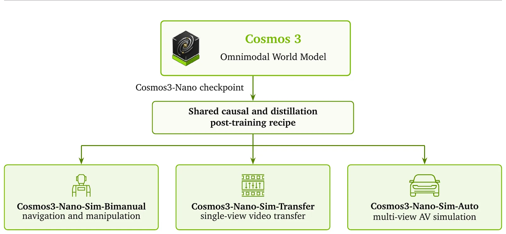
问题。物理 AI（机器人、车）的动作会改变后续观测，所以训练和测试都需要能“响应动作”的环境。真实世界采集贵且有风险，仿真更安全。生成式世界模型能提供更多样的外观，但要用来交互，它必须在新控制到来时增量地出画面，记住之前的场景变化，并且在规定的响应时间内返回。
做法。在 Cosmos 3（2606.02800）上做一套共享的后训练：因果训练加蒸馏，再配流式执行。配方直接沿用 Causal-rCM（2606.25473，同一团队）。支持两种用法：从录下的经验学视觉动力学（动作进、画面出），以及按外部仿真器的物理状态生成观测（结构控制进、画面出）。
三个例子见上面的速览。作者明确说：各例子按各自协议评测，由策略驱动时模拟器是否有用，需要单独的闭环验证。这句在后面结果里反复出现。
结论：结构基本照搬 Cosmos 3，唯一共享的改动是生成塔里的时间因果注意力：按块（chunk）划分，块内互相看，只能看更早的块，不能看未来的块。
把 \(L\) 个目标隐帧切成有序、不相交、连续的块 \(\mathcal B_1,\dots,\mathcal B_J\)，第 \(j\) 块有 \(N_j\ge1\) 个隐帧，对应每视角 \(4N_j\) 个新 RGB 帧。块 \(j\) 的视觉部分 \(\mathcal V_j\) 在扩散时刻 \(\tau\) 的带噪版本记作 \(\tilde{\mathcal V}_j^\tau\)，对齐的干净控制记作 \(\mathcal U_j\)。当前生成块和逻辑输入是
\(\mathcal T\) 是语言 token，\(\mathcal H_j\) 是保留下来的干净历史（推理时以 K/V 缓存 \(\mathcal H_j^{\rm KV}\) 存在，不必真的拼接）。只有 \(\tilde{\mathcal V}_j^\tau\) 带噪、算损失；控制在块内处理但不算损失。去噪完成后得到干净块 \(\hat{\mathcal G}_j=[\mathcal U_j,\hat{\mathcal V}_j]\)，写进历史，下一块的输入是
K/V 缓存有上限时，加新条目可能要淘汰旧的（§4.1）。
流式控制。每个目标块配一组和它物理时段对齐的干净控制。采样一块之前，这一块的全部控制必须到齐：策略或仿真器要先给出这一段的动作或控制，模型才开始去噪。块越大，等控制的时间越长。
时间对齐。动作是每 RGB 帧一个，时间压缩 4 倍，所以相邻隐帧之间有 4 个动作；动作用视觉 token 1/4 的旋转时间增量，最后一个动作和对应隐帧共享时间坐标。第一帧前面没有真实动作。
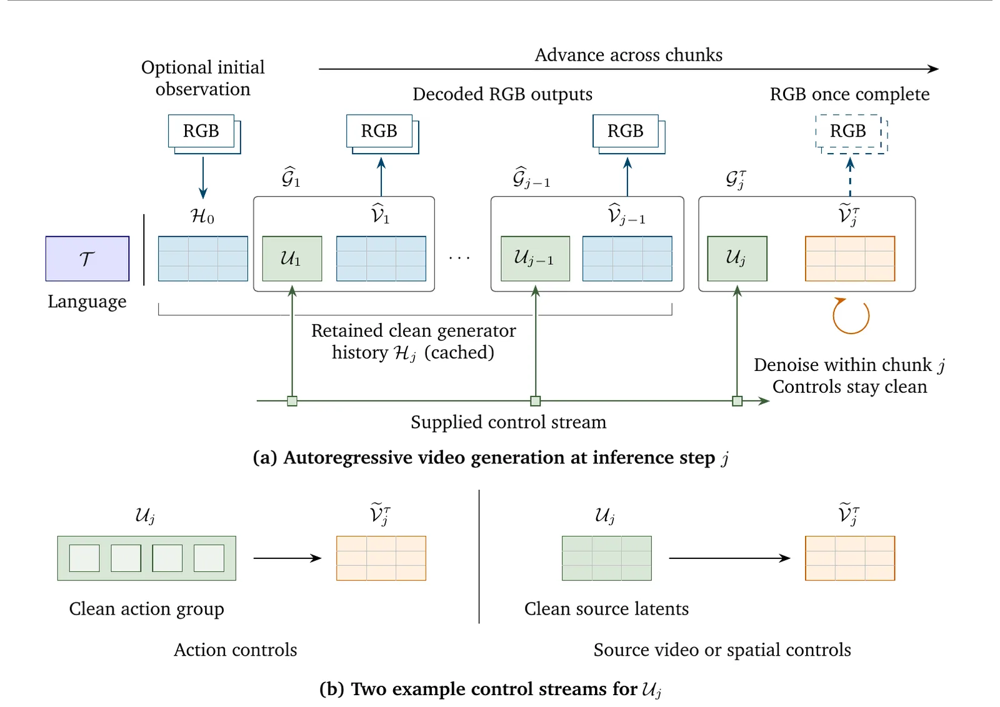
序列打包。不同长度、分辨率的录像打包进同一缓冲区，用布尔注意力掩码保证每条录像只看自己、不看 padding，并满足跨塔、时间、token 角色规则。设备切分不构成注意力边界。
把生成塔的双向时间注意力换成块因果：每个注意力块对应一个生成块，块内带噪视觉互相看（联合去噪），也能看保留的干净历史，不能看未来块。同一时段内提供的源视频可以看；字幕和缓存条件要限制可见性，防止泄露未来目标。
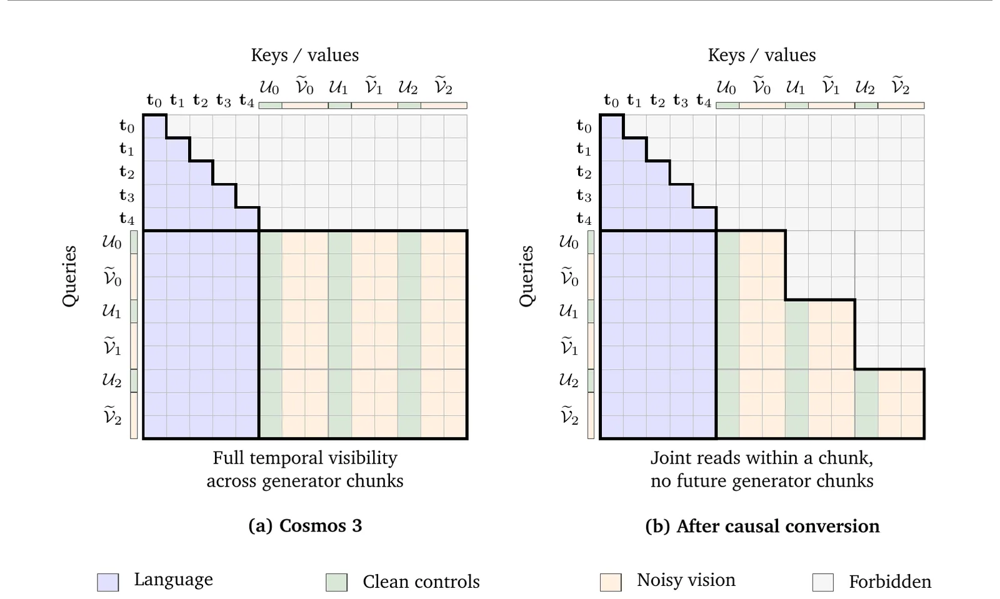
按块分解。记 \(\mathbf z_{1:L}\) 为要生成的目标隐变量（不含给定的首帧），\(\mathcal I_j\) 为块 \(j\) 开始生成前已接受的条件（控制组、初始观测、时间戳、语言），在条件序列预先给定时：
块之间因果，块内自由交互。块小，响应控制更频繁；块大，一次建模更长区间，画质可能更好。
作者特别说明：这个分解假设条件是外部预先给定的。闭环时策略根据模型之前的输出选下一步动作，条件就依赖于模拟出来的轨迹；回放录好的控制只覆盖了条件生成，没有检验策略驱动的反馈。
结论：四个顺序阶段，每个阶段解决一个问题：领域和控制（Stage 0）、因果（1）、步数（2）、自己生成的历史带来的暴露偏差（3）。条件 token 一律作为干净条件，不算损失。
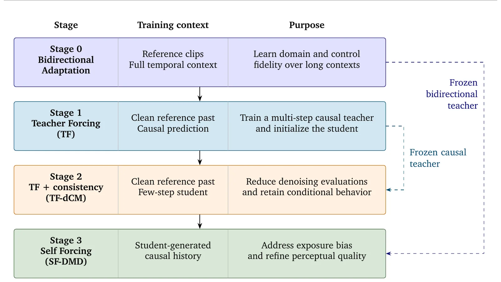
先在双向注意力下把 Cosmos 3 生成器适配到各例子的观测域和条件接口，并用较长的连续片段训练，让教师见过长历史。适配后的权重既初始化因果化，又作为 Stage 3 的冻结双向教师。损失是 rectified flow：
一个片段共用一个 \(\tau\)。\(w_{\rm bidir}=1/(CTHW)\)，用整段序列大小（含条件帧）归一化。噪声时间用非均匀采样加分辨率相关的偏移（附录 B.2）。
每个例子选一个名义块大小。历史 \(\mathcal H_j\) 是参考（真实）目标、之前的控制和初始观测；附加条件 \(\mathcal C_j=(\mathcal T,\mathcal U_j)\)。损失逐块求和，同一个样本共用一个 \(\tau\)：
干净/带噪两路掩码。干净参考 query 只看因果可用的干净输入；带噪 query 读严格更早块的干净历史，并和本块的控制、带噪视觉联合注意。不能直接或间接（经条件状态、缓存 K/V）看到当前块的干净目标。
回放式 teacher forcing。与其造一个同时容纳干净和带噪 token 的大掩码，不如分两遍：第一遍处理干净参考，存下每层 K/V；第二遍并行评估所有带噪目标，读本块和严格更早的干净缓存。要和单次打包前向等价，需要保留或重算穿过干净缓存的梯度。
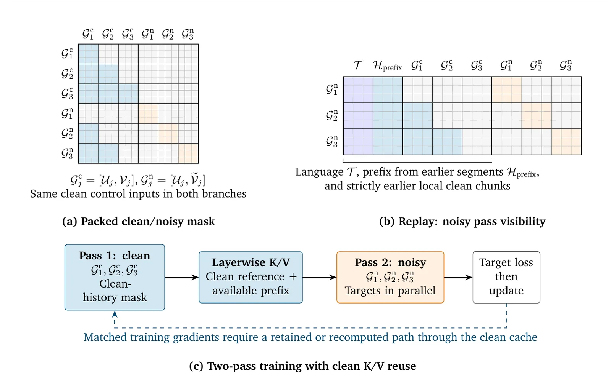
历史和控制固定，学生学一个一致性映射：从教师去噪轨迹上不同的点都预测同一个终点。
采一对时间 \(0\le s<\tau\le1\)，冻结的因果教师 \(\psi_{\rm AR}\) 带 CFG 走一步 Euler，从 \(\tau\) 到 \(s\)：
CFG 约定 \(\mathbf v^{\rm CFG}=\mathbf v^{\rm base}+\gamma(\mathbf v^{\rm cond}-\mathbf v^{\rm base})\)，\(\gamma=1\) 即纯条件场。学生匹配两个噪声水平上的终点：
\(w^{\rm dCM}_j=1/(CHW)\)。目标分支整条停梯度（包括它的干净历史缓存）。学生学的是带 CFG 的教师轨迹，推理时每步只需一次条件前向。
Stage 2 在真实历史上学少步去噪，但推理时历史是自己生成的。Stage 3 从 Stage 2 学生出发，在学生自己的 rollout 上训练（Self Forcing 加 DMD）。块内按调度 \(1=\tau_{j,K_j}>\dots>\tau_{j,0}=0\) 交替做终点预测和高斯重加噪：
训练只对每块最后一次去噪求导：
教师和辅助打分模型。冻结的 Stage 0 双向教师 \(\psi_{\rm bidir}\) 给参考分数，可训练的辅助模型 \(\phi\)（“fake score”）估计当前学生分布的分数，两者都对整段 rollout 用双向时间注意力。理想目标是带噪的反向 KL：
辅助模型在重加噪、停梯度的学生输出上训练：
\(\lambda_{\rm RF}=1\)。高斯腐蚀下后验终点均值 \(\mathbf m_{a,\tau}\) 和分数的关系是
于是理想的路径梯度是
一个 \(1-\tau\) 来自腐蚀的雅可比，另一个来自分数到终点的换算。实际更新用打分模型代替后验均值，并做自适应归一化：
三个模型都用 \(\delta=10^{-6}\)。生成器拟合一个停梯度的终点偏移：
单视角 RGB 模型 \(a_i=CHW\)；RGB 和 LiDAR 联合时每个模态分开算再组合。作者说得很清楚：自适应归一化替换了理想的时间因子，最后一步求导替换了完整 rollout 的雅可比，加上近似打分模型，这是一个受反向 KL 启发的实用替代，不是式 (13) 的精确梯度。
回放式反传。先不带梯度生成整段 rollout，存下每块最后的带噪输入、时间、停梯度的缓存前缀和 DMD 目标；然后一块一块重算最后一次预测并反传，累积梯度后一次更新。省峰值显存，不改变估计量。
退出策略。每块用几次去噪：max 规则总用上限（和推理一致）；cycle 规则轮流用不同步数。三个最终模型都用 max、每块 4 次。
附录 C.1 给的 4 步 SDE 时间表是 \([1,15/16,5/6,5/8]\)，说是 shift 5 的表。按附录 B.2 的偏移 \(S_\kappa(u)=\kappa u/(1+(\kappa-1)u)\)，取 \(\kappa=5\)、\(u=1,3/4,1/2,1/4\)：\(S=1,\ 3.75/4=15/16,\ 2.5/3=5/6,\ 1.25/2=5/8\)，正好是均匀 4 步再做偏移。代码 bimanual_profiles.py 的 _T_LIST = (1.0, 0.9375, 0.8333…, 0.625)、transfer_self_forcing.py 的 t_list 相同。TF-dCM 的时间对间隔 1/48 对应代码 teacher_forcing_dcm_total_steps=48；“一步 Euler”对应 tf_dcm.py 里的 “one teacher Euler step”。
代码 distillation/common_loss.py 的 make_vsd_pseudo_target 正是式 (18)(19)：\(w=1/(\mathrm{mean}|g-\text{ref}|+10^{-6})\)，伪目标 \(g-w\cdot\text{grad}\)。另有一个 per_instance_sum 模式改用 clamp(min=1e-5)，默认 vsd_loss_reduction="mean"，我没找到三个模型的配置启用它。“1 次学生更新配 5 次辅助更新”在配置里写作 student_update_freq=6。Bimanual 的检查点 1,380 = 230 + 1,150，正好 1:5；Sim-Auto 的 250 + 1,250 = 1,500、50 + 250 = 300 也是 1:5。
自己画的 · 11 幕 3D 框架动画
拆成 11 幕：总览、MoT 和 token 排布、块因果掩码（可切块大小，当场数可见对数）、Stage 0/1 两遍 teacher forcing、Stage 2 一致性蒸馏（当场算偏移后的时间）、Stage 3 自回放和 DMD（嵌在这里的是这一幕）、流式 K/V 缓存（三种窗口可切）、每块时间预算和实时系数、Bimanual 的 59 维动作、Sim-Transfer 闭环、Sim-Auto 多传感器时间轴。标“示意”的是我画的形状，数字来自论文和代码。
结论：少步蒸馏只减少了每块的生成器调用次数；条件准备、历史读写、解码仍在每块里。流式推理靠复用之前算过的状态来压这些成本，同时要分清“吞吐”和“响应延迟”。
下一块预测。和 TF 训练不同，推理时历史是生成的。采样块 \(j\) 时条件和历史都不变；新到的条件只能影响下一个还没采样的块。采样完的隐变量分两路：更新 K/V 缓存（为下一块）和因果解码（出画面），两路可以放在不同 GPU 上并行。
把干净 K/V 追加到历史。去噪完成后，用完成块（含控制和生成的隐变量）重新跑一遍得到干净的逐层 K/V：
单视角动作路径按时间顺序逐个隐帧刷新，后面的帧能读到刚刷新的前面帧，和 TF 的干净分支一致。一块的成本是 \(K_j+R_j\) 次生成器调用（\(K_j\) 次去噪、\(R_j\) 次历史刷新），批量刷新时 \(R_j=1\)。
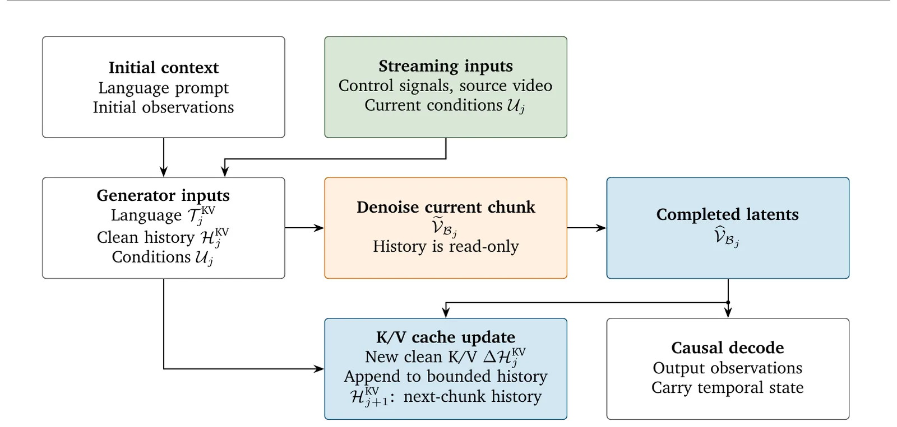
有界历史和初始 sink。仿照 StreamingLLM：缓存保留一段固定的初始 sink 加一个最近条目的滚动窗口，新条目挤掉最旧的非 sink 条目，时间戳不重编号。窗口填满后存储和注意力上下文都固定。注意：训练时可以保留全历史、评测时用窗口加 sink（§5.3、§5.5 就是这样），所以历史策略是评测工作点的一部分。
指标。\(t_{\rm in}\) 是收到某个控制的时刻，\(t_{\rm obs}\) 是受它影响的第一帧解码完成的时刻：
\(F\) 是在耗时 \(T\) 内产出的帧数，\(D\) 是它们代表的物理时长。实时吞吐要求 \(\mathrm{RTF}\le1\)。吞吐量衡量产能，控制到画面的延迟衡量响应。顺序执行时每块预算是
具体手段：
式 (22) 的 \(T_{\rm control\to obs}\) 在全文没有一个实测值；表格报的是每块墙钟时间、吞吐和首块启动时间。按式 (23) 我做个下界估算（我的推算，假设控制按物理时间实时到达、没有显示和传输延迟）：Bimanual 一块 8 帧要先攒 8/30 = 267 ms 的动作，再加 166 ms 生成，约 0.43 s；Sim-Transfer 一块 4 帧攒 133 ms，加 240–401 ms（编译有界到 eager），约 0.37–0.53 s；Sim-Auto 一块攒 400 ms，加单相机 364 ms 约 0.76 s，用了 map GPU 预取还要再多一块的控制延迟（附录 D.4 说 1 chunk）。这些都只是量级。
结论：一个检查点同时管相机导航和机器人/人手操作，靠一个 59 维的统一动作接口；在导航基准上质量比列出的最强基线高 8.6 到 11.2 分，在 AgiBot 两个基准上五项指标都好于 DreamDojo 2B 和 14B。所有评测都是回放动作的开环预测。
动作表示。59 维：9 维自身位姿（ego pose）、右手 24 维加右夹爪开度、左手 24 维加左夹爪开度。位姿是 3 维平移加 6D 旋转；手的 24 维是 9 维手腕位姿加 5 个指尖相对手腕的 3D 位置（9 + 15）。合计 \(9+(24+1)+(24+1)=59\)。每个来源先映射到这个布局，用有效掩码标出哪些字段是观测到的；领域相关的归一化用反双曲正弦（asinh），再经按域选择的投影：
时间对齐。位姿动作用每 16 个 RGB 帧更新一次的锚点：区间 \(j\) 内的位姿 \(\mathbf T_t\) 编码成 \(\mathbf T^{-1}_{b(j)}\mathbf T_t\)，\(b(j)\) 是区间前的那一帧。这样既在局部坐标系下，又不会随整条轨迹累积变大。每个隐帧区间配 4 个逐帧动作；因果模型每块预测 2 个隐帧（启动后 8 个新 RGB 帧），所以一个锚点区间跨 2 块。首帧配空动作，和后来的“零运动”命令语义不同。
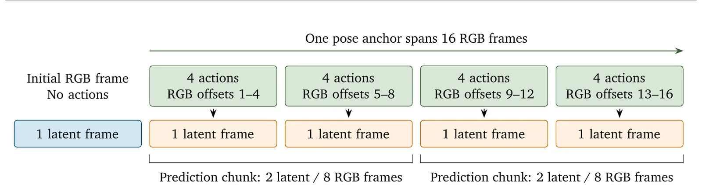
混合动作序列。同一条动作序列里可以先操作、再导航、再操作，每个转移带自己的域标签和掩码。切换域时不换模型、不重置 rollout，从保留的视觉历史接着生成。
按正文拆 \(9+24+1+24+1=59\)。代码 bimanual_profiles.py 设 max_action_dim=64、action_schema="unified_v1"、action_global_asinh=True、num_embodiment_domains=32；推理文档 docs/inference_bimanual.md 说 sidecar 已归一化和掩码，推理时“只追加 5 个零通道”，\(59+5=64\)，对得上。混合示例里 AgiBot 是域 15，相机位姿是域 2。Stage 0 的 lr_multipliers 给 action2llm 和 action_modality_embed 5 倍，和 §5.3 一致。
| 来源 | 动作信息 | 语言条件 |
|---|---|---|
| 相机视频，多为航拍和第一人称 | 给定或估计的相机位姿 | 只描述环境，不提相机运动 |
| AgiBot（论文）和 YAM | 各机体自己的字段 | 改写成初始状态描述 |
| Mecka | 人手腕、指尖，和可用的自身字段 | 改写成初始状态描述 |
| Behavior-1K（论文） | 仿真机体动作 | 原生的任务描述 |
表 1 的内容，照录原文。
四个阶段都用相机、机器人、人手数据，权重 2:2:1；前三阶段 256p 和 480p 按 2:1 混合，SF-DMD 只用 480p；片段最多 901 帧。因果阶段每块 2 个隐帧，训练时保留全部历史、没有 sink，这比评测用的 64 隐帧窗口长：训练和最终推理在“历史从哪来”和“能看多少历史”两方面都不一样。
| 阶段 | 检查点迭代 | RGB 帧上限 | 学习率 | 分辨率 | 教师 CFG |
|---|---|---|---|---|---|
| Teacher | 35,000 | 901 | 10⁻⁵ | 256p / 480p | — |
| TF | 8,000 | 901 | 10⁻⁵ | 256p / 480p | — |
| TF-dCM | 4,000 | 901 | 2 × 10⁻⁶ | 256p / 480p | 3 |
| SF-DMD | 1,380 | 901 | 10⁻⁶ / 2 × 10⁻⁷ | 480p | 1 |
表 2 · Bimanual 各阶段设置。SF-DMD 学习率是学生 / 辅助打分模型；CFG 1 即不用 CFG。
Stage 0 从公开的 Cosmos3-Nano 初始化，动作投影和动作模态嵌入用 5 倍学习率。Stage 2 用 CFG 3 的教师蒸到 4 步。Stage 3 关掉教师 CFG，学生和辅助模型 1:5 交替。
Bimanual：TF-dCM 3、SF-DMD 1；代码 teacher_forcing_dcm_teacher_guidance=3.0、action_conditioned_teacher_guidance=1.0，一致。附录表 B.4 显示 SF-DMD 用 CFG 6 反而更差。Sim-Transfer：表 7 写 TF-dCM 和 SF-DMD 都是 3；代码里 SF 的通用工厂函数默认 teacher_guidance=6.0，但 transfer_stage3_profiles.py 显式改成 3.0，注释说是“刻意和 Stage 2 对齐”，所以发布配方和论文一致。Sim-Auto：两个蒸馏阶段 1.5，代码 auto_profiles.py 同。代码里 Bimanual 的 _MAX_ITERS=(35000, 8000, 4000, 1500)，SF-DMD 跑到 1,500，论文选的是 1,380 这个检查点。
1 张 GB300，编译去噪、CUDA Graph、64 个隐帧的 K/V 窗口、TAEHV Super 解码；4 步去噪，每块 2 个隐帧解码成 8 帧，640 × 352。
| 配置 | 每块 p50（ms） | p95 | 产能（FPS） | 块数 | 次数 |
|---|---|---|---|---|---|
| 编译预设，TAEHV Super | 166 | 169 | 48.1 | 720 | 3 |
| 编译预设，Wan 2.2 解码器 | 229 | 231 | 35.0 | 240 | 1 |
表 3 · 1 张 GB300 上的解码器对比。每块 8 帧，在 30 FPS 下代表 267 ms 物理时间；去掉每次运行前 10 块预热。
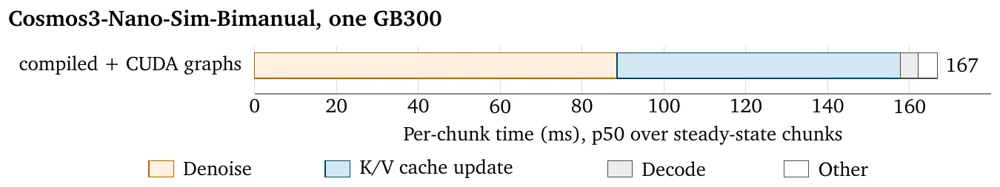
K/V 更新占了块时间的很大一部分，所以只减去噪步数决定不了端到端加速。解码器质量另测：80 个 Camera Easy 样本上 PAI-Bench-G 分数 Wan 71.8、TAEHV Super 70.9。
8 / 0.166 = 48.2，8 / 0.229 = 34.9，和表里 48.1、35.0 一致（差在汇总口径）。中位数减少 229 − 166 = 63 ms，63 / 229 = 27.5%；48.1 / 35.0 = 1.37 倍，都和正文一致。实时系数 RTF = 166 / 266.7 = 0.62，确实快于回放。图 9：89 + 69 + 4.4 = 162.4，剩下约 4.6 ms 是“其他”；K/V 刷新占 69 / 167 = 41%。
评测设定。最终 SF-DMD 学生，4 步，64 个隐帧的 K/V 窗口，其中 8 个是 sink。基准都回放录好或合成的动作，没有策略根据生成画面选下一步。基线各用自己的原生推理设置。
导航。300 个 PAI-Bench-G 图生视频用例（合成的 1 分钟相机轨迹），加 Sana-WM-Bench 的简单、困难各 80 个（961 帧、16 FPS、60 秒）。画质用 PAI-Bench-G 总分；漂移是开头和结尾等长片段的分数差：
相机对齐：用 ViPE 从生成视频估计位姿，Umeyama 对齐后算 ATE、RTE、RRE。
| 模型 | 质量 ↑ | 漂移 ↓ | ATE ↓ | RTE ↓ | RRE ↓ |
|---|---|---|---|---|---|
| PAI-Bench-G I2V | |||||
| Cosmos3-Nano-Sim-Bimanual | 73.9099 | 0.0210 | 4.7072 | 0.0545 | 0.1002 |
| LingBot-World 2.0 | 65.3577 | 0.0209 | 4.1698 | 0.0596 | 0.1781 |
| Sana-WM | 65.2090 | 0.0299 | 6.4823 | 0.1284 | 0.1601 |
| Sana-WM-Bench simple | |||||
| Cosmos3-Nano-Sim-Bimanual | 77.2887 | 0.0118 | 1.0040 | 0.0124 | 0.0551 |
| LingBot-World 2.0 | 65.9748 | 0.0371 | 1.4254 | 0.0185 | 0.2591 |
| Sana-WM | 66.0599 | 0.0223 | 1.2159 | 0.0192 | 0.2356 |
| Sana-WM-Bench hard | |||||
| Cosmos3-Nano-Sim-Bimanual | 76.3971 | 0.0161 | 1.3085 | 0.0161 | 0.1774 |
| LingBot-World 2.0 | 64.5462 | 0.0372 | 1.3423 | 0.0161 | 0.3264 |
| Sana-WM | 65.5699 | 0.0251 | 1.3165 | 0.0178 | 0.1826 |
表 4 · 相机导航基准，照录原文。LingBot-World 2.0 即 2607.07534。
Sana-WM-Bench 两组上质量高、漂移低、轨迹也更准（困难组 RTE 打平）。PAI-Bench-G 上是取舍：RTE、RRE 更低，但 ATE 4.7072 不如 LingBot 的 4.1698，漂移 0.0210 对 0.0209。
操作。AgiBot-World 232 个窗口（186 条源 episode），AgiBot-GEAR 100 个窗口（30 条），每个 901 帧、30 FPS、30 秒。对比 DreamDojo 2B 和 14B 的双向教师（骨干、数据、动作适配器都不同）。指标加上和参考帧的 PSNR、SSIM、LPIPS。
| 模型 | 质量 ↑ | 漂移 ↓ | PSNR（dB）↑ | SSIM ↑ | LPIPS ↓ |
|---|---|---|---|---|---|
| AgiBot-World | |||||
| Cosmos3-Nano-Sim-Bimanual | 76.0884 | 0.0118 | 14.4138 | 0.6839 | 0.3454 |
| DreamDojo 2B | 74.5327 | 0.0149 | 12.1016 | 0.6405 | 0.3766 |
| DreamDojo 14B | 74.9390 | 0.0133 | 12.3561 | 0.6635 | 0.3586 |
| AgiBot-GEAR | |||||
| Cosmos3-Nano-Sim-Bimanual | 74.4912 | 0.0188 | 14.0158 | 0.6172 | 0.4057 |
| DreamDojo 2B | 72.4586 | 0.0232 | 11.5709 | 0.5437 | 0.4638 |
| DreamDojo 14B | 73.0033 | 0.0218 | 12.1113 | 0.5818 | 0.4326 |
表 5 · 机器人操作基准，照录原文。
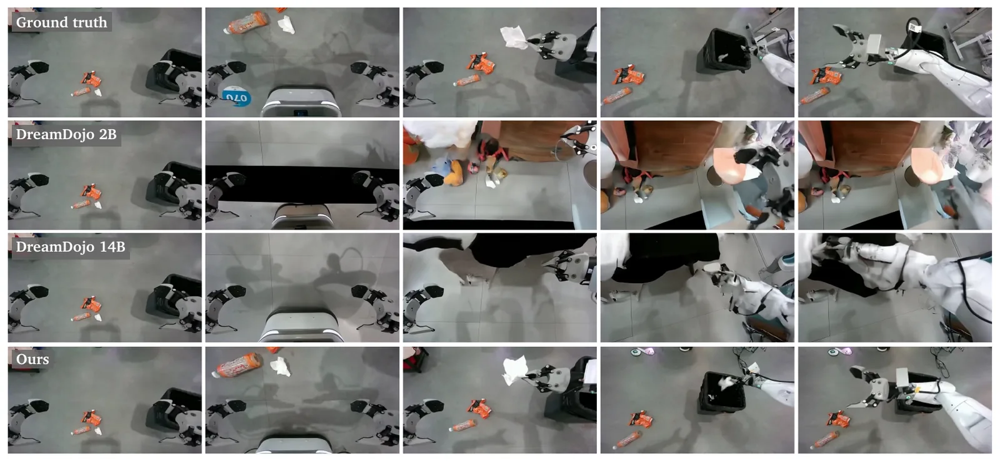
各阶段对比（30 个 GEAR 用例，各用原生推理配置）：
| 阶段 | 步数 | 质量 ↑ | PSNR ↑ | SSIM ↑ | LPIPS ↓ |
|---|---|---|---|---|---|
| 双向教师 | 35 | 73.385 | 13.452 | 0.591 | 0.454 |
| 因果 TF | 35 | 72.367 | 12.482 | 0.502 | 0.516 |
| TF-dCM | 4 | 72.375 | 11.847 | 0.525 | 0.512 |
| SF-DMD | 4 | 74.251 | 13.479 | 0.589 | 0.447 |
表 6 · Bimanual 各阶段在 AgiBot-GEAR 子集上的对比。
因果化让质量从 73.385 降到 72.367、PSNR 从 13.452 降到 12.482；蒸到 4 步质量持平但 PSNR 再降到 11.847。SF-DMD 把大部分损失找回来，PSNR、SSIM、LPIPS 都接近双向教师，质量还略高。作者提醒：这一阶段同时加了训练、改成只用 480p、换了别的设置，所以只能当作“整个 SF-DMD 阶段”的效果；30 个用例上没有配对的不确定度。
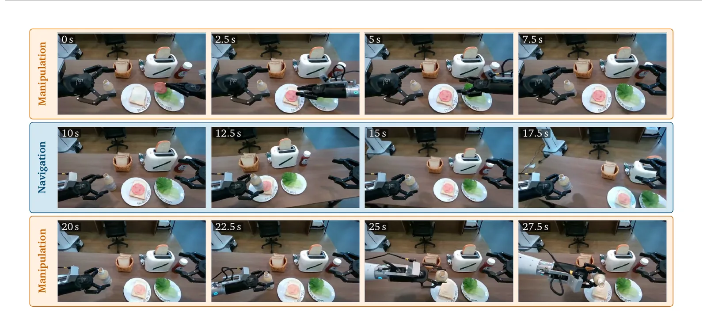
定性结果。图 10 同一张初始图配四条相机轨迹，画面按轨迹分开；图 12 的回环轨迹在 59 秒回到建筑和车，本文保留了黄车和木屋，LingBot-World 2.0 的场景变了，Sana-WM 有明显伪影。
评测范围（作者原话的意思）。相机指标量轨迹跟随，参考帧指标量和录像的一致性；接触力学、任务成功和闭环策略行为都需要专门评测。
质量领先：73.9099 − 65.3577 = 8.5522；77.2887 − 66.0599 = 11.2288；76.3971 − 65.5699 = 10.8272，即正文的 8.55、11.23、10.83。PSNR 对 DreamDojo 14B：14.4138 − 12.3561 = 2.0577，14.0158 − 12.1113 = 1.9045。LPIPS 相对下降：(0.3586 − 0.3454)/0.3586 = 3.68%，(0.4326 − 0.4057)/0.4326 = 6.22%。表 6：74.251 − 72.375 = 1.876，13.479 − 11.847 = 1.632，0.589 − 0.525 = 0.064，0.512 − 0.447 = 0.065。全部和正文一致。
窗口 64 个隐帧 = 256 帧。Sana-WM-Bench 是 16 FPS，256 帧只有 16 秒；图 12 在 59 秒回到 0.125 秒时见过的建筑。滚动窗口早已不含那段，能看到的只有 8 个 sink 隐帧（首帧加 7 × 4 = 29 帧，约 1.8 秒）。所以回访一致性主要来自开头那一小段 sink，而不是一般意义的长记忆（我的推断，论文只说“在活动历史窗口内”）。另外代码有一个论文没写的“视锥检索”选项（kv_cache_frustum_path，sink 8 + 检索 32 + 最近 32），论文的结果没有用它。
\(1+4n\) 帧对应 \(1+n\) 个隐帧。901 帧 = 1 + 4 × 225：225 个目标隐帧按每块 2 个切，是 112 块加 1 个单隐帧的尾块（§2.2 允许 \(N_j\ge1\)）；代码文档也只要求动作数能被 4 整除。961 帧 = 1 + 4 × 240，正好 120 块。Sim-Transfer 的 597 帧 = 1 + 4 × 149，表 12 的有界窗口 51 = 1 个 sink + 49 个最近 + 当前，控制和 RGB 成对，所以是 102 个缓存槽，和原文一致。Sim-Auto 的 397 帧 = 1 + 4 × 99，即 100 个隐帧，§7.1.3 的“100 latent frames（397 RGB frames）”也对上。
结论：物理交给仿真器，外观交给生成器。输入深度/分割/边缘/模糊之一加语言，输出真实感 RGB；每块 1 个隐帧（4 帧）以减小缓冲延迟。在 TransferBench 上四种控制的跟随都好于 Cosmos 3 GA 参考，但画质和几何一致性略差；吞吐是 GA 的 3.6 倍，但 30 FPS 下仍不到实时。
每个样本只给一种控制：深度约束几何，分割约束区域身份，边缘约束轮廓，模糊保留粗外观和布局。控制视频和 RGB 目标走同一个因果 Wan2.2 tokenizer（时间 4 倍、空间各 16 倍）。注意力规则（图 14）：控制 query 能读到本块为止的控制，但只能读严格更早的干净 RGB，这样训练时控制表示不会偷看当前的干净目标。两遍 teacher forcing 里，带噪那一遍直接复用干净那一遍的控制 K/V。
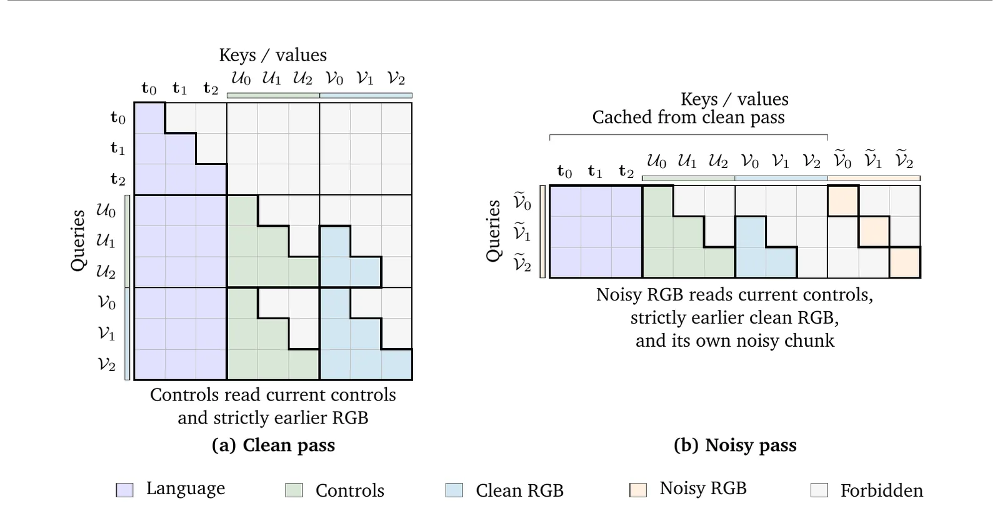
闭环时：策略动作推进仿真器 → 仿真器给新控制 → 渲染器出 RGB → 策略做下一步决定。离线评测时控制序列提前全部编码。
temporal_caption。四种控制等权采样；Stage 0 混合 480 和 720（2:1），之后只用 480。RGB 前缀长度 0、1、2 个隐帧，概率 0.7、0.2、0.1。语言 0.93 用完整 JSON、0.07 只用稠密描述；Stage 0–2 有 10% 丢文本，Stage 3 不丢；控制从不丢。优化器 fused AdamW，BF16 计算、FP32 主参数；Stage 0 \(\beta=(0.9,0.99)\)、权重衰减 0.05；Stage 1 \((0.9,0.999)\)；Stage 2、3 \((0,0.999)\)；因果阶段权重衰减 0.01；EMA 相对宽度 0.1。
| 阶段 | 检查点 | RGB 帧 | 基础学习率 | 教师 CFG |
|---|---|---|---|---|
| Teacher | 3,806 | 5–201（480p），5–149（720p） | 10⁻⁴ | — |
| TF | 6,000 | 9–201 | 10⁻⁵ | — |
| TF-dCM | 2,250 | 9–201 | 2 × 10⁻⁶ | 3 |
| SF-DMD | 1,500 | 9–201 | 10⁻⁶ / 2 × 10⁻⁷ | 3 |
表 7 · Sim-Transfer 各阶段设置。Stage 0 学习率在第 \(i\) 步乘 \(0.4(1-i/100{,}000)\)，从 4 × 10⁻⁵ 开始。
Stage 3 的两个打分模型都从 Stage 0 教师初始化（一个冻结作参考，一个可训练的 fake score），1 次学生更新配 5 次 fake score 更新，用回放式反传。
每块去噪 1 个 RGB 隐帧，读对齐的控制、缓存的语言 K/V、保留的干净控制和 RGB 历史；流式 Wan2.2 VAE 跨块携带时间状态。全历史或 sink 加滚动窗口二选一。torch.compile 加按块 CUDA Graph，同时刻意保持数值行为：归一化不编译、平方激活的规约顺序不变、FP32–BF16–FP32 的中间舍入保留、K/V 顺序不变。
TransferBench。Cosmos-Transfer1 提出的基准：600 条源视频，AgiBot、Ego-Exo4D（论文）、OpenDV（论文）各 200，每条配四种控制，共 2,400 个输出，每个 121 帧。对比 Cosmos 3 GA 参考和各阶段检查点；双向教师和 TF 用 50 步 UniPC、CFG 3，TF-dCM 和 SF-DMD 用 4 步 SDE、CFG 1。指标：DOVER；Gemini 3.1 Pro Preview 打 0–10 的 Quality 和 Prompt；首末 15% 帧的 PAI-Bench-G 漂移；分割 IoU、模糊 SSIM、边缘 F1、深度 SI-RMSE；约 1 秒间隔帧对的 Sampson 误差。
| 模型 | DOVER ↑ | Quality ↑ | 漂移 ↓ | 分割 IoU ↑ | 模糊 SSIM ↑ | 边缘 F1 ↑ | 深度 SI-RMSE ↓ | Prompt ↑ | Sampson ↓ |
|---|---|---|---|---|---|---|---|---|---|
| 双向教师（3,806） | 10.3955 | 5.0042 | 0.006370 | 0.7465 | 0.9074 | 0.4692 | 0.5279 | 7.1842 | 0.080947 |
| TF（6,000） | 10.2112 | 4.2200 | 0.008265 | 0.6948 | 0.8591 | 0.2973 | 0.7594 | 6.7625 | 0.087848 |
| TF-dCM（2,250） | 10.0403 | 4.2588 | 0.011730 | 0.7070 | 0.8569 | 0.3051 | 0.7273 | 6.7288 | 0.098861 |
| Cosmos3-Nano-Sim-Transfer | 10.1759 | 4.9508 | 0.006504 | 0.7378 | 0.8867 | 0.3407 | 0.6194 | 7.0254 | 0.096544 |
| Cosmos 3 GA 参考 | 10.3596 | 4.9296 | 0.006349 | 0.6433 | 0.8559 | 0.2140 | 0.8423 | 7.1846 | 0.081045 |
表 8 · TransferBench 全量结果（原文分 (a)(b)(c) 三块，这里合并成一张）。
相对 GA 参考，最终学生四项控制指标都更好（边缘 F1 +59.2%，深度误差 −26.5%），VLM Quality 略高；DOVER 和 Prompt 分别低 1.8% 和 2.2%，漂移和 Sampson 误差更高。SF-DMD 九项全部好于 TF-dCM；双向教师九项全部好于最终学生。TF 和 TF-dCM 的小差别做了按源视频的配对 bootstrap（附录 C.3）。
0.3407 / 0.2140 = 1.592，即 +59.2%；(0.8423 − 0.6194) / 0.8423 = 26.5%；(10.3596 − 10.1759) / 10.3596 = 1.77%；(7.1846 − 7.0254) / 7.1846 = 2.22%。逐列比较确认：SF-DMD 对 TF-dCM 九列都更好；双向教师对最终学生九列都更好。TF-dCM − TF 的边缘 F1 差 0.3051 − 0.2973 = 0.0078，DOVER 差 −0.1709（正文 −0.1708，舍入差），Quality 差 0.0388。Sampson 误差比 GA 高 (0.096544 − 0.081045)/0.081045 = 19%，这是因果学生最明显的退步。
Isaac Lab 闭环。Unitree G1 人形的苹果放盘任务，物理用 Isaac Lab 3.0.0b2 和 Isaac Sim 6.0.0.1。策略是在 402 条真机演示上微调了 15,000 步的 GR00T N1.7（权重）。每次决策策略收到 640 × 480 头部相机 RGB、43 维关节状态和指令，输出 16 个动作。仿真器 30 Hz 执行动作、240 Hz 算物理；每 4 个动作采一次深度（仿真时间 7.5 Hz），渲染器每次更新生成 4 帧 RGB，最后一帧给策略。于是策略决策频率是仿真时间 1.875 Hz。渲染器用 SF-DMD 学生，4 步 SDE、CFG 1、30 个隐帧窗口、3 个 sink。每回合最多 600 个动作（20 秒），成功由仿真器状态判定。
| 外观 | Isaac RTX | Sim-Transfer |
|---|---|---|
| 校准基线 | 22/32 | 27/32 |
| 绿苹果 | 20/32 | 24/32 |
| 红盘子 | 22/32 | 19/32 |
| 绿苹果、红盘子、白桌布 | 16/32 | 17/32 |
| 策略训练步数 | Isaac RTX | Sim-Transfer | 差（pp） |
|---|---|---|---|
| 5,000 | 17/32 | 20/32 | +9.4 |
| 10,000 | 16/32 | 12/32 | −12.5 |
| 15,000 | 22/32 | 27/32 | +15.6 |
| 20,000 | 24/32 | 21/32 | −9.4 |
| 30,000 | 18/32 | 18/32 | 0.0 |
| 40,000 | 17/32 | 19/32 | +6.3 |
表 9 · (a) 固定 15,000 步策略换外观；(b) 固定基线外观换策略检查点。原文说明：场景提示词是在 15,000 步策略、这 32 个起点上校准的，所以是校准集上的结果。
15,000 步策略下 4 种外观有 3 种 Sim-Transfer 更高；六个检查点里最高的是 Sim-Transfer 在 15,000 步的 27/32（84.4%），RTX 最高是 20,000 步的 24/32（75.0%）。
百分比核对：27/32 = 84.4%，22/32 = 68.8%，差 15.6 pp；其余各行差值也对（−12.5、−9.4、+6.25 写作 +6.3）。附录表 C.9 给了配对结果，我核对过每行“两者都成功 + 仅一方成功”正好等于表 9 的计数，四格和都是 32。15,000 步那一行：不一致的起点只有 2（仅 RTX 成功）对 7（仅 Sim-Transfer 成功），精确符号检验双侧 \(p=2\sum_{k\le2}\binom9k/2^9=2\times46/512=0.18\)。六个检查点合起来：RTX 114/192，Sim-Transfer 117/192，不一致对 28 对 31，\(p\approx0.79\)。再加上提示词是在同一批起点、同一个 15,000 步策略上调的，我认为这个实验能说明“生成的观测可以接进策略闭环且不明显变差”，还不足以说明“比原生渲染更好”。
长 rollout 吞吐。160 条 VisDex 回合 × 4 种控制，640 个 600 帧、640 × 640 的视频，GB200 上 BF16 eager（不编译、不用 CUDA Graph），30 个隐帧窗口、3 个 sink。
| 控制 | FPS/GPU | 每块 p50 / p95（ms） | 首块 p50 / p95（s） |
|---|---|---|---|
| 深度 | 9.928 | 401 / 418 | 6.93 / 7.23 |
| 分割 | 9.896 | 403 / 420 | 6.55 / 6.64 |
| 边缘 | 9.920 | 401 / 418 | 6.33 / 6.42 |
| 模糊 | 9.957 | 399 / 421 | 6.26 / 6.37 |
表 10 · 最终学生在 600 帧 VisDex rollout 上的运行时间。每块通常 4 帧。VisDex 在论文参考文献里没有出处（未核实是什么数据）。
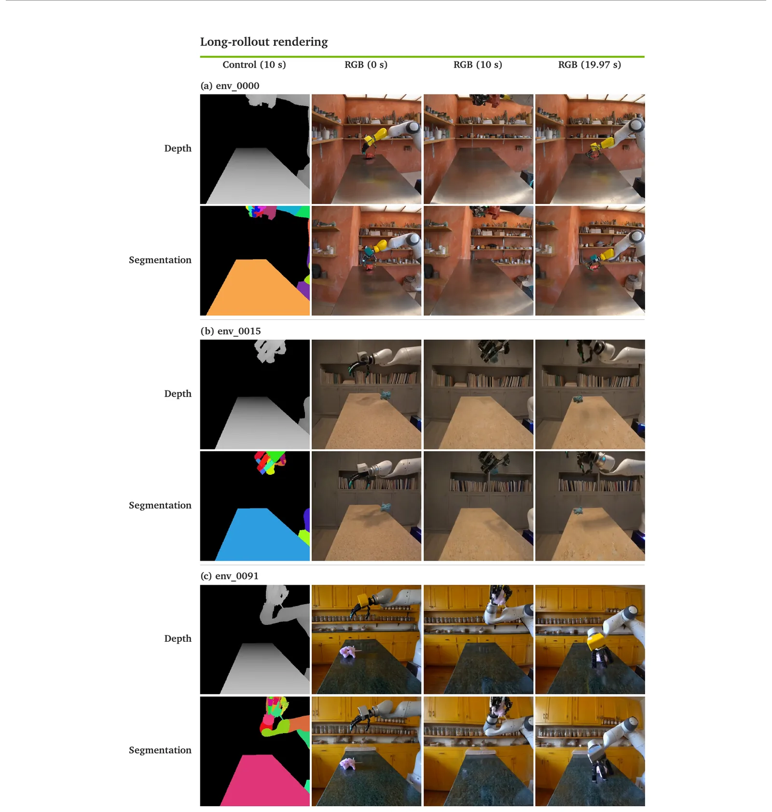
| 指标 | Cosmos 3 GA 参考 | Sim-Transfer |
|---|---|---|
| 稳态 FPS/GPU ↑ | 2.766 | 9.912 |
| 生成延迟 | 43.30 s/块（约 120 帧） | 0.403 s/块（约 4 帧） |
| 稳态峰值显存（GiB）↓ | 36.15 | 39.58 |
表 11 · 同一深度和分割负载下的对比。
编译和缓存。597 帧深度控制、1 张 GB200：
| 历史 / 执行 | FPS ↑ | 每块 p50 / p95（ms） | 峰值 已分配 / 预留（GiB） | DOVER | VLM Prompt | VLM Quality |
|---|---|---|---|---|---|---|
| 全历史 / eager | 6.8802 | 560.87 / 761.73 | 55.06 / 60.09 | 8.6524 | 5.3125 | 2.4375 |
| 全历史 / 编译 | 11.4068 | 348.19 / 443.82 | 74.59 / 79.72 | 8.6524 | 5.3125 | 2.4375 |
| sink + 最近 / eager | 9.0403 | 435.88 / 509.87 | 44.10 / 47.76 | 9.0190 | 5.3750 | 2.5000 |
| sink + 最近 / 编译 | 15.8516 | 240.42 / 268.71 | 52.73 / 57.82 | 9.0190 | 5.3750 | 2.5000 |
表 12 · BF16 推理优化（原文 (a)(b) 两块合并；毫秒和 GiB 保留两位小数，原文四位）。有界窗口是 51 个隐帧位置：1 个 sink、49 个最近、当前 1 个。
编译加按块 CUDA Graph 最多快 1.75 倍；每组 16 对 eager 和编译视频逐帧完全相同（32 对、19,104 帧）。
视频名义帧率 30 FPS，所以 \(\mathrm{RTF}=30/\mathrm{FPS}\)：最快的“sink + 最近 / 编译”是 30 / 15.8516 = 1.8926，和附录表 C.2 列出的 RTF 1.8926 一字不差；“全历史 / eager” 30 / 6.8802 = 4.3603，也和表 C.2 一致。表 10 的 eager 配置 30 / 9.928 = 3.02。也就是说，Sim-Transfer 生成 1 秒 30 FPS 视频最快要 1.9 秒。正文的说法是“亚秒级的观测更新”（每块 0.403 s），这是对的，但它不是 RTF ≤ 1 意义上的实时。结论里“部分配置达到实时吞吐”指的是 Bimanual（RTF 0.62）和 Sim-Auto 单相机（364 / 400 = 0.91）。闭环实验里每次决策要 4 块，约 4 × 0.4 = 1.6 s 墙钟时间（若和表 10 速度相当，我的推算；闭环用的 GB300 编译配置没有报时间），对应 16 / 30 = 0.53 s 仿真时间。
9.912 / 2.766 = 3.58 倍。按每帧算：GA 43.30 s / 120 帧 = 0.361 s，Sim-Transfer 0.403 s / 4 帧 = 0.101 s。GA 600 帧平均 217.17 s，600 / 217.17 = 2.763 FPS，和 2.766 一致。计数：每种控制保留 144 个视频，600 − 117 = 483 帧，按 4 帧一块是 121 块，144 × 121 = 17,424，正好是表 10 说的块数；两种控制 34,848；GA 144 × 2 × 4 = 1,152 个块，也对。代价是显存多 3.4 GiB。
11.4068 / 6.8802 = 1.658，15.8516 / 9.0403 = 1.753，即正文的 1.66 倍和 1.75 倍。编译后显存反而更高（全历史 55.1 → 74.6 GiB 已分配）。有界窗口不仅快，画质分数也略高（DOVER 9.02 对 8.65），和附录 C.6 的窗口扫描方向一致。
结论：驾驶模拟要多相机和 LiDAR 在视角、模态、时间上一致，并跟随道路和交通参与者的控制。先训一个双向的 Cosmos3-Nano-Transfer-Auto（离线生成），再走同一套三阶段因果配方得到 Cosmos3-Nano-Sim-Auto（流式）。每块 0.4 秒：每相机 12 帧（3 个隐帧）加 4 帧 LiDAR。
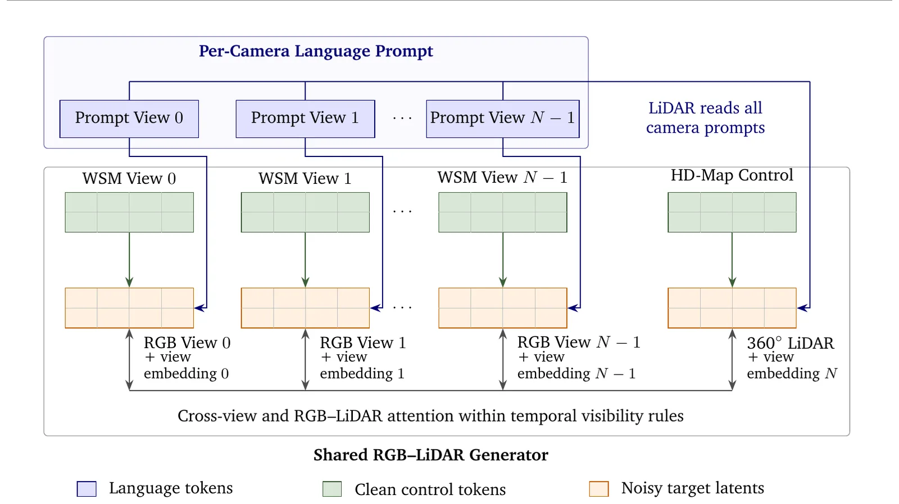
7.1.1 模态表示。RGB 和渲染出的 WSM（World Scenario Map）控制用同一个视频 VAE，48 通道、空间 16 × 16、时间 4 倍压缩，再按 2 × 2 patch 投影；每个相机独立编码，带物理时间戳和相机身份嵌入打包在一起。LiDAR 用单独的层次 transformer VAE（受 LidarVerse 启发）：每帧 360° 扫描投影成 128 × 1800 的距离图（距离、强度、有效位三通道），方位方向循环填充到 1808 列以便 16 × 16 压缩；不做时间下采样，\(T\) 帧扫描得到 \((128,T,8,113)\) 的隐变量，1 × 1 patch，每帧 8 × 113 = 904 个 token。
结构控制。WSM 视频画车道线、道路边界、人行横道、地面标记、停止线、杆、交通标志和信号灯，3D 立方体表示车辆、行人等，语义颜色区分类别，按每个相机的内外参沿自车轨迹渲染。LiDAR 用渲染到距离图视角的 HD 地图。
时间。相机 30 FPS 经 4 倍压缩是 7.5 Hz 的隐帧（间隔 4/30 s），LiDAR 10 Hz 不压缩。两者按物理时间戳对齐，0.4 s 是它们的最小公共周期：3 个相机隐帧间隔、4 个 LiDAR 间隔。
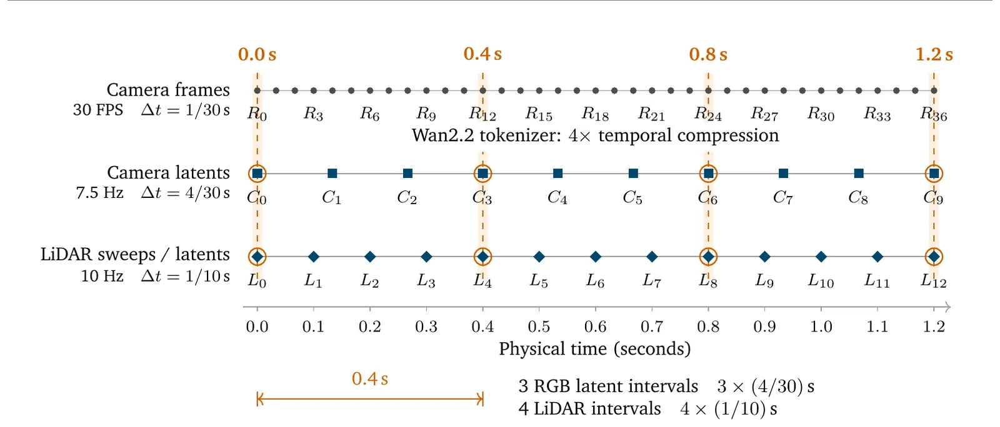
7.1.2 位置编码和视角身份。沿用三轴 MRoPE，各相机用自己的空间坐标、共享时间原点，所以不同相机同一网格位置、同一时间戳的 token 位置编码相同。为区分它们，仿照 Cosmos-Transfer2.5 Multiview，给每个相机一个可学习的视角嵌入，加到该相机所有 token 上。
7.1.3 多视角多模态注意力。
11 个视角、每相机 100 个隐帧（397 帧）时，理论上相机注意力计算减少约 9.9 倍。之前 0.4 s 的窗口比对称的 ±0.2 s 好；跨传感器分支里排除查询自己的视角（不重复计入）也更好。
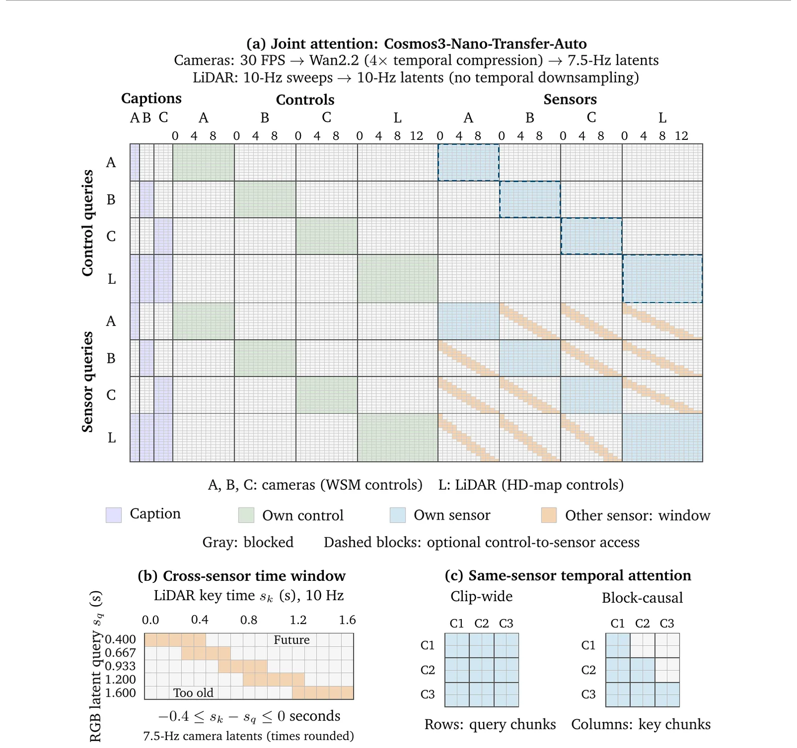
7.1.4 因果建模。Sim-Auto 保留上述路由，只把同传感器的全片段注意力换成块因果；跨传感器仍是之前 0.4 s 窗口，所以同一块里也不能读别的传感器更晚的时间戳。每块（初始时间步之后）是每相机 12 帧（3 个隐帧）加 4 帧 LiDAR。
式 (28)(29) 主项相除：\(\frac{(N_vN_t)^2}{N_vN_t^2+N_v^2N_t}=\frac{N_vN_t}{N_t+N_v}=\frac{11\times100}{111}=9.91\)，和原文一致。但式 (29) 假设跨视角只看“同一时刻”；实际窗口是之前 0.4 s，每个查询在别的相机上能看到约 4 个隐帧时刻（含当前）。把第二项乘 4：\(1100/(100+44)=7.6\) 倍（我的推算，没算 LiDAR）。另外附录 D.6.1 说按相邻视角稀疏化“在我们的实现里没有提速”，§7.4.1 说 FlexAttention 的部分块掩码会吃掉理论收益，所以理论倍数和实测不是一回事。
训练生成器各块、扩散时间嵌入、RGB 和 LiDAR 的输入输出投影、传感器嵌入；推理塔和两个 tokenizer 冻结。RGB:LiDAR 损失权重 1:2。相机组合从 15 种预设里采（1 到 11 个）：480p 时标准 7 相机 0.6、全 11 相机 0.3、其他 13 种共 0.1；720p 时 7 相机 0.9；选全 11 个时一律 480p。10% 的联合样本丢掉 LiDAR 和 HD 地图；整段描述丢弃 0.2，单相机描述丢弃 0.2；T2V 和 I2V 各半。
| 阶段 | 更新次数 | RGB 帧 | 学习率 | 教师 CFG |
|---|---|---|---|---|
| Stage 0：双向训练 | ||||
| 模态分开 | 60,000 | ≤ 397 | 8 × 10⁻⁵ | — |
| 短序列联合 | 20,000 | 61 | 5 × 10⁻⁵ | — |
| 长序列联合 | 20,000 | ≤ 397 | 5 × 10⁻⁵ | — |
| Stage 1：TF | 3,200 | ≤ 397 | 10⁻⁵ | — |
| Stage 2：TF-dCM | 900 | ≤ 397 | 2 × 10⁻⁶ | 1.5 |
| Stage 3：SF-DMD | ||||
| 短序列 | 250 / 1,250 | 93 | 10⁻⁶ / 2 × 10⁻⁷ | 1.5 |
| 长序列 | 50 / 250 | 397 | 10⁻⁶ / 2 × 10⁻⁷ | 1.5 |
表 13 · Transfer-Auto 和 Sim-Auto 的训练配方。128 个 GB200 节点（512 张卡）。
7.3.1 直接在 400 帧上联合训练收敛慢（尤其 LiDAR），所以分三步：先模态分开（RGB 单相机 ≤ 397 帧、LiDAR 21 帧），再短序列联合（61 帧、21 帧，约 2 秒），最后长序列联合（≤ 397 帧、133 帧，约 13.2 秒）。双向阶段的长上下文有利于后面蒸馏出的模型稳定。7.3.2 每个因果阶段从上一阶段的普通权重（不是 EMA）初始化，重置优化器。SF-DMD 先 93 帧 1,500 次，再 397 帧 300 次。SF-DMD 太少会留下漂浮物体之类的伪影，太多会出现时间闪烁。
训练：每个打包序列约 1.5M token，GB200 上上下文并行加 FSDP、BF16、激活重算。注意力先用 FlexAttention + FlashAttention-4，但传感器帧边界和 kernel 的块不对齐，部分可见的块要逐元素掩码，抵消了收益；自写的无掩码后端（gather → 变长注意力 → scatter → 按 LSE 合并）比 FlexAttention 快 2.5–3 倍。
推理：在 FlashDreams 的 Interactive Drive 客户端里跑住宅场景，832 × 480、4 步、有界缓存，每块每相机 12 帧，30 FPS 下目标是 400 ms 一块。
| 视角 | 模式 | GPU | 布局 | eager（ms） | 优化后（ms） | FPS |
|---|---|---|---|---|---|---|
| 1 | RGB | 1 | 1 model | 524（512–535） | 364（362–423） | 32.6 |
| 4 | RGB | 16 | 8 model + 8 map | — | 408（377–440） | 28.9 |
| 7 | RGB | 16 | 16 model | 897 | 609 | 19.5 |
| 7 | RGB | 16 | 8 model + 8 map | 950（936–1,014） | 583（561–597） | 20.5 |
| 7 | RGB | 32 | 16 model + 16 map | — | 511（510–511） | 23.2 |
| 7 | RGB + LiDAR | 16 | 16 model | 1,159 | 701（693–714） | 16.7 |
表 14 · GB200 上选定的运行点。每块墙钟时间是多次运行中位数的中位数，括号是重复范围；FPS 是客户端收到的速率。map GPU 提前一块准备控制。
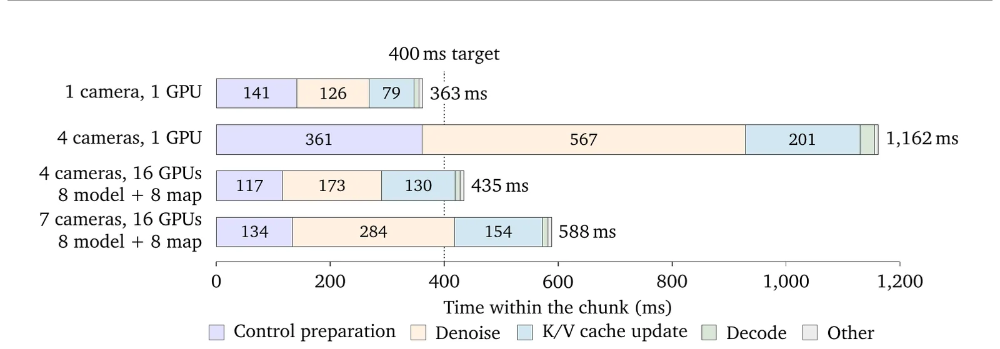
发布的优化让 1 相机 1 卡的块时间少 30%，7 相机 16 卡少 32%；编译去噪贡献最大。把无掩码注意力换回块稀疏的 FlexAttention，7 相机的块时间多 195%。map GPU 只有在模型卡够多时才划算：4 相机时 8 + 8 布局 408 ms 对 16 个模型卡 545 ms；加 LiDAR 时 16 张全做模型卡更好。7 相机 RGB 在 32 卡上 23.2 FPS、RGB + LiDAR 在 16 卡上 16.7 FPS，都低于 30 FPS。图 22 说明只加速去噪不够：单相机时控制准备和 K/V 更新加起来超过去噪。
(524 − 364)/524 = 30.5%，(897 − 609)/897 = 32.1%，对。客户端 FPS 比 12 帧 / 中位块时间略低：12 / 0.364 = 33.0 对 32.6，12 / 0.701 = 17.1 对 16.7，口径不同，差得不多。图 22 的标注：单相机控制准备 + K/V = 141 + 79 = 220 ms，确实大于去噪 126 ms；7 相机 134 + 154 = 288 ms，比去噪 284 ms 还多 4 ms，正文说“接近”略保守。图 22 的柱长和表 14 有小差（4 相机 435 对 408、7 相机 588 对 583），图是单次中位运行，表是多次运行中位数的中位数，都在重复范围内。
两个留出集：Driving-Sim-Eval（91 条，用 HD 地图导出的 WSM）和内部的 Traffic-Scenario-Eval（319 条，用感知得到的带噪 WSM 和指定环境属性，做 T2V）。RGB 基线是 Cosmos-Transfer2.5 多视角版（见 Cosmos-Predict2.5 精读），LiDAR 基线是 LidarVerse。
| 模型 | 帧 FID ↓ | FVD I3D ↓ | FVD SG-V ↓ | DOVER ↑ | TSE ↓ | ACM ↑ | CSE-2 ↓ | CSE-5 ↓ |
|---|---|---|---|---|---|---|---|---|
| (a) Transfer-T2V：没有初始 RGB | ||||||||
| Cosmos3-Nano-Transfer-Auto | 45.5 | 488 | 487 | 9.01 | 0.473 | 0.906 | 2.009 | 1.633 |
| Cosmos3-Nano-Sim-Auto | 48.6 | 480 | 479 | 7.30 | 0.503 | 0.906 | 2.599 | 2.244 |
| Cosmos-Transfer2.5 | 61.9 | 772 | 770 | 8.56 | 0.530 | 0.885 | 2.511 | 2.073 |
| (b) Transfer-I2V：有初始 RGB | ||||||||
| Cosmos3-Nano-Transfer-Auto | 27.8 | 238 | 237 | 8.27 | 0.472 | 0.902 | 2.246 | 1.798 |
| Cosmos3-Nano-Sim-Auto | 33.6 | 325 | 324 | 7.51 | 0.505 | 0.900 | 2.359 | 2.085 |
| Cosmos-Transfer2.5 | 41.4 | 388 | 387 | 8.25 | 0.519 | 0.881 | 2.935 | 2.203 |
表 15 · Driving-Sim-Eval 多视角 RGB，每相机 297 帧 720p，7 个非鱼眼视角。
双向的 Transfer-Auto 每项都好于 Cosmos-Transfer2.5。4 步的 Sim-Auto 在两种模式下 FID、FVD 和时间一致性都好于基线，T2V 的 I3D FVD 甚至略好于自己的教师（480 对 488）；但 T2V 的跨视角 Sampson 误差比基线高，DOVER 也是基线更好。
| 模型 | BEV JSD 全局（×10⁻²）↓ | BEV JSD 局部 ↓ | BEV MMD² 局部（×10⁻³）↓ | FUD ↓ | Utonia MMD²（×10⁻²）↓ | CTC/真 →1 | 车辆 CTC/真 →1 | 对象支撑召回 ↑ | 检测 F1@3m ↑ |
|---|---|---|---|---|---|---|---|---|---|
| Cosmos3-Nano-Transfer-Auto | 4.01 | 0.220 | 3.47 | 12.8 | 2.08 | 1.17 | 2.53 | 0.885 | 0.237 |
| Cosmos3-Nano-Sim-Auto | 5.52 | 0.277 | 5.93 | 20.1 | 3.54 | 1.28 | 3.59 | 0.816 | 0.188 |
| LidarVerse，21 帧 | 15.1 | 0.400 | 12.0 | 33.6 | 6.36 | 1.20 | 2.51 | 0.843 | 0.201 |
| LidarVerse，116 帧 | 11.6 | 0.300 | 6.44 | 44.8 | 9.07 | 1.35 | 3.73 | 0.788 | 0.200 |
表 16 · 原文分 (a)(b) 两块，这里合并。列顺序按正文“FUD 改善 62–71%”反推为第 4 列（33.6 → 12.8 是 61.9%，44.8 → 12.8 是 71.4%）。
| 模型 | 车辆 F1 ↑ | 行人 F1 ↑ | 骑行者 F1 ↑ |
|---|---|---|---|
| Cosmos3-Nano-Transfer-Auto | 0.908 | 0.386 | 0.537 |
| Cosmos3-Nano-Sim-Auto | 0.853 | 0.389 | 0.428 |
| Cosmos-Transfer2.5 | 0.741 | 0.137 | 0.151 |
表 17 · Traffic-Scenario-Eval 上的 AutoGrader 对象跟随，319 个 T2V 样本。
| 模型 | 画质 | 车道 | 信号灯 | 标志 | 行人 | 骑行者 | 跨视角：车道/路标 | 信号灯 | 停车标志 | 行人 | 骑行者 | 路面 | 天气 |
|---|---|---|---|---|---|---|---|---|---|---|---|---|---|
| Transfer-Auto | 1.72 | 2.43 | 1.83 | 2.17 | 1.64 | 1.85 | 2.93 | 2.93 | 2.98 | 2.94 | 2.98 | 92.8% | 90.9% |
| Sim-Auto | 1.39 | 2.54 | 2.24 | 2.45 | 1.70 | 1.83 | 2.98 | 2.91 | 2.94 | 2.94 | 2.96 | 87.0% | 81.0% |
| Cosmos-Transfer2.5 | 1.65 | 2.28 | 1.59 | 1.78 | 1.20 | 1.38 | 2.77 | 2.68 | 2.76 | 2.58 | 2.63 | 93.1% | 89.7% |
表 18 · Traffic-Scenario-Eval 人工评测（1–3 分；环境两列是符合提示的样本比例）。两位标注者独立打分，分歧由第三位裁定。
LiDAR：Transfer-Auto 九项里八项好于两种 LidarVerse 设置（例外是车辆 CTC 2.53 对 2.51）；Sim-Auto 五项分布指标都好于 LidarVerse，但时间和对象指标只好于 116 帧设置、不如 21 帧设置，检测 F1 0.188 略低于两者。交通对象跟随 Sim-Auto 三类都好于 Cosmos-Transfer2.5；比教师，车辆和骑行者 F1 低 6% 和 20%。人工评测里 Sim-Auto 场景元素和跨视角都高于基线，但画质 1.39 最低，路面和天气符合度 87.0%、81.0% 也最低。
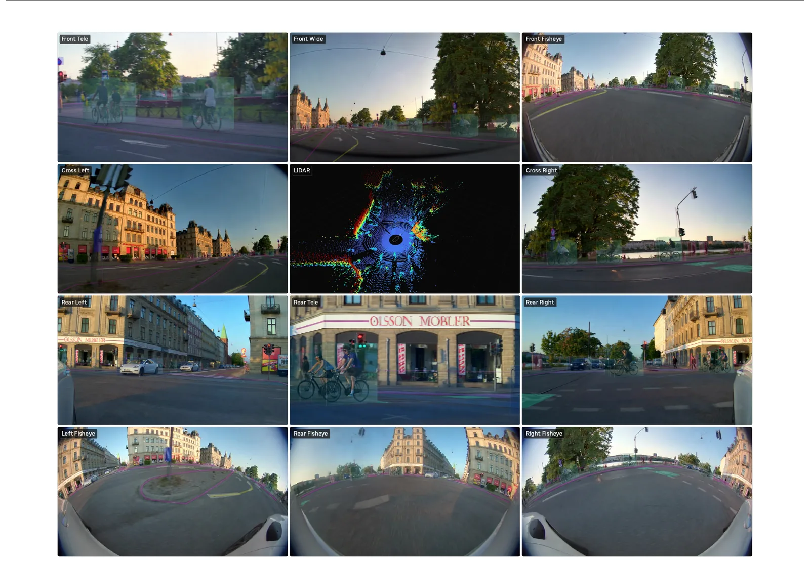
一小时稳定性。两条驾驶场景连续生成 1 小时，循环使用 WSM 控制和描述，滚动 K/V 缓存（2 块：初始块作 sink 加最近一块）。DOVER、ACM、TSE、CSE-5 没有持续退化；但作者说物体外观和物理合理性会在长 rollout 中变差。
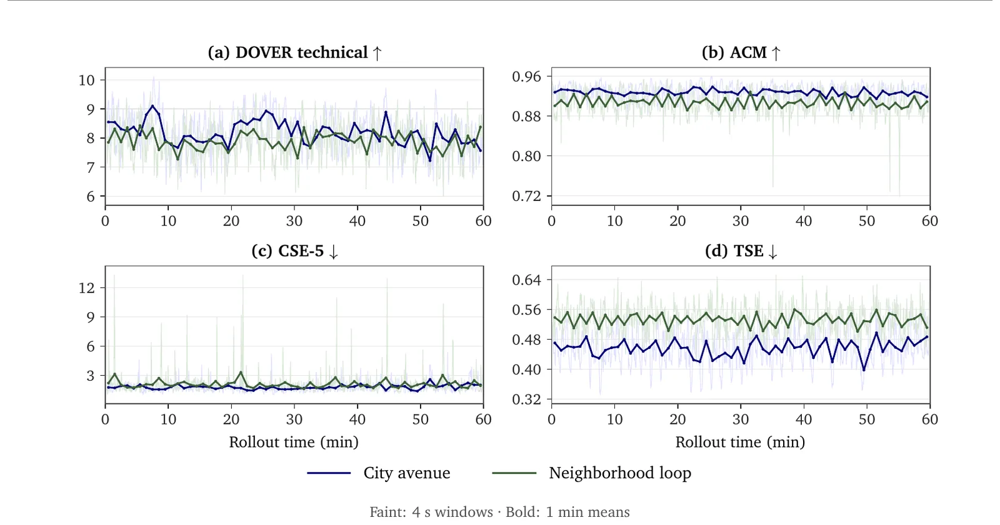
FID 改善：T2V (61.9 − 45.5)/61.9 = 26.5%，I2V (41.4 − 27.8)/41.4 = 32.9%，即“26–33%”。FVD：T2V 36.8%（I3D）和 36.8%（SG-V），I2V 38.7% 和 38.8%，正文写“37–39%”，下端是四舍五入后的说法。CSE“约 20% 更低”：四个数是 20.0%、21.2%、23.5%、18.4%。Sim-Auto 在 T2V 的 Sampson 误差“高 4–8%”：2.599/2.511 = +3.5%，2.244/2.073 = +8.2%。LiDAR：BEV JSD (11.6 − 4.01)/11.6 = 65.4%、(15.1 − 4.01)/15.1 = 73.4%；FUD 61.9%、71.4%。表 17：(0.908 − 0.853)/0.908 = 6.1%，(0.537 − 0.428)/0.537 = 20.3%。表 18：Sim-Auto 五个场景元素有四个高于教师（骑行者 1.83 < 1.85），跨视角最大差 2.98 − 2.93 = 0.05。都和正文一致。
附录 D.3.3 说 7 个 720p 视角、每视角 397 帧、133 帧 LiDAR 及其控制约 1.53M token（不含语言）。按 16 倍 VAE 加 2 × 2 patch，720 / 32 = 22.5，向上取整 23；1280 / 32 = 40。RGB：7 × 100 × 40 × 23 = 644,000，WSM 控制同样多；LiDAR 133 × 904 = 120,232，HD 地图同样多。合计 \(2\times644{,}000+2\times120{,}232=1{,}528{,}464\)，正是 1.53M。若按 22 行算是 1.47M。所以 720p 在 token 网格上实际按 23 行（736 像素高）处理（我的推算）。顺带：832 × 480 时每相机每隐帧 26 × 15 = 390 个 token，一块 3 个隐帧、7 相机是 8,190 个，加 LiDAR 4 × 904 = 3,616 个。
作者总结：因果学习、少步蒸馏和有状态的流式执行，把 Cosmos 世界基础模型变成了响应动作和场景控制的交互模拟器；三个例子覆盖“预测动作的视觉后果”和“按外部仿真器状态生成观测”；部分配置达到实时吞吐，校准过的机器人实验演示了经生成观测的策略反馈。展望是让模拟成为由智能体决策塑造的持续经验来源。
按模型结构、数据、训练、推理、评测等分组列出，组内按姓氏字母排序；统筹 Chen-Hsuan Lin、Ming-Yu Liu。另有 28 位致谢。
B.1 数据和描述。和 §5.2 一致：首段改写为初始状态，改写模型只看这一段。评测用的 332 个 AgiBot 片段描述是按 2 FPS 采帧生成，再用同一改写提示得到。
B.2 训练配置。四个阶段同一条件规则：首帧和完整动作序列是干净条件，其余帧是目标。噪声时间采样（三个模型通用）：双向适配和 TF 用 Cosmos 3 的 mode 采样，尺度 1.29：
\(\kappa=3\)（256p）、5（480p）、10（720p）。TF-dCM 在 \((1/48,1)\) 上均匀取 \(u\)，对 \((u,u-1/48)\) 做同样偏移；SF-DMD 的打分时间在 \((0,1)\) 均匀取再偏移。每卡 1 个片段、不累积梯度。双向和 TF 用 FusedAdam、学习率 10⁻⁵；TF-dCM 2 × 10⁻⁶、\(\beta=(0,0.999)\)，参考分支把场景描述换成空串；SF-DMD 学生 10⁻⁶、辅助 2 × 10⁻⁷，教师不用 CFG。BF16 计算，FSDP 下 FP32 主权重；最终检查点都用 EMA 权重。
B.3 解码器。80 个样本质量 71.8 → 70.9；480p GB200 上同步解码快 1.42–1.91 倍，异步解码 1.06–1.18 倍。作者说这些工作负载和最终基准不同，不构成匹配的质量-速度对比。
B.4 指标。PSNR、SSIM、LPIPS 是动作跟随的代理指标，不独立验证接触或任务结果；ATE 等在 Sim(3) Umeyama 对齐后算，不代表绝对尺度。
都在 Sana-WM-Bench camera-easy 上评测；不同表之间检查点和配方不同，绝对分数不可横比。
| 表 / 设置 | 质量 ↑ | ATE ↓ | RTE ↓ | RRE ↓ |
|---|---|---|---|---|
| B.1 教师片段长度（迭代 3,500） | ||||
| 长，≤ 961 帧 | 75.165 | 1.756 | 0.029 | 0.286 |
| 短，固定 253 帧 | 74.113 | 2.007 | 0.089 | 0.316 |
| B.2 全量微调对 LoRA（迭代 2,000） | ||||
| 全量微调 | 77.086 | 1.594 | 0.018 | 0.081 |
| LoRA，秩 16 | 74.979 | 1.954 | 0.048 | 0.224 |
| B.3 TF-dCM 教师 CFG（迭代 2,000） | ||||
| 1 | 78.237 | 0.259 | 0.018 | 0.694 |
| 3 | 78.431 | 0.244 | 0.014 | 0.367 |
| 5 | 78.287 | 0.225 | 0.012 | 0.145 |
| B.4 SF-DMD 教师 CFG（迭代 1,000） | ||||
| 1（不用 CFG） | 76.344 | 0.943 | 0.012 | 0.149 |
| 6 | 74.587 | 1.233 | 0.015 | 0.282 |
| B.5 退出策略和步数（迭代 3,500） | ||||
| cycle，2 步 | 74.540 | 1.012 | 0.015 | 0.082 |
| max，2 步 | 75.024 | 1.039 | 0.012 | 0.201 |
| cycle，4 步 | 73.933 | 1.138 | 0.015 | 0.095 |
| max，4 步 | 75.169 | 1.474 | 0.016 | 0.064 |
| B.6 混合训练（每块 4 个隐帧，迭代 4,500） | ||||
| 双向推理：只双向 | 75.792 | 1.245 | 0.016 | 0.079 |
| 双向推理：混合 1:1 | 76.055 | 1.496 | 0.019 | 0.081 |
| 因果推理：只因果 | 68.263 | 1.479 | 0.025 | 0.555 |
| 因果推理：混合 1:1 | 67.580 | 1.521 | 0.035 | 0.693 |
| B.7 标准 SF-DMD 对流式长调（SLT，迭代 2,000） | ||||
| SF-DMD（长上下文教师） | 77.167 | 1.434 | 0.017 | 0.088 |
| SLT（短片段教师） | 70.567 | 1.539 | 0.016 | 0.164 |
要点：长片段教师四项都好；全量微调好于秩 16 LoRA；TF-dCM 的 CFG 3 质量最高、CFG 5 轨迹最准，生产选 3；SF-DMD 不用 CFG 更好；max 4 步质量和 RRE 最好但 ATE、RTE 最差，没有哪个配置全面占优，生产选 max 4 步；双向和因果交替训练在因果推理下不如只训因果；SLT 质量低 6.6 分，还出现重复的画面图案。我核对了正文给的差值（1.052、2.107、0.194、0.144、1.757、0.484、6.600），全对。
C.1 数据和采样。2,153,548 条中排除 156,946 条：宽高比畸变超 3% 有 114,453 条，源帧率不在 5–60 有 10,870 条，描述包装无效 145 条，没有完整可用描述窗口 31,478 条（四项相加正好 156,946，读者注 20）。负分支用固定的负面描述。学生 SDE 采样时间 \([1,15/16,5/6,5/8]\)，语言和控制的 guidance 都是 1。Stage 3 训练时 K/V 窗口 51 个隐帧、1 个 sink。
C.2 运行时剖析。表 C.2 给出 RTF：全历史 eager 4.3603、全历史编译 2.6300、有界 eager 3.3185、有界编译 1.8926；软件是 Torch 2.13 nightly、CUDA 13.3。表 C.3 拆分每块：以最快的“有界编译”为例，去噪 127 ms、历史刷新 35 ms、控制 K/V 插入 34 ms、流式 VAE 解码 42 ms；进程从启动到第一帧输出要 26–79 秒（含编译）。前 121 帧上用 Video Depth Anything 比较，四种配置的 SI-RMSE 都是 5.2124。
C.3 基准补充。深度误差的定义：
九个指标的 TF-dCM − TF 配对 bootstrap（10,000 次，按源视频、分域）：DOVER、模糊 SSIM 显著变差，分割 IoU、边缘 F1、深度显著变好，漂移和 Sampson 显著变差，Prompt 和 Quality 的区间含 0。长 rollout（600 帧 VisDex）上，学生的分割 IoU 和 Quality 高于 GA，其余（DOVER 9.17 对 11.50、Sampson 0.150 对 0.081 等）都是 GA 好。窗口和 sink 扫描（表 C.6）：sink 3 时窗口 10 → 30，DOVER 9.652 → 10.056；窗口 50 质量略高但 DOVER 降；sink 6 Prompt 高但 DOVER 和 Quality 降，最终选窗口 30、sink 3。
表 C.5：Sampson 误差 0.150449 对 GA 的 0.081120，是 1.85 倍；121 帧的 TransferBench 上只是 1.19 倍（读者注 10）。DOVER 9.1682 对 11.5036，低 20%。生成越长，几何一致性和 GA 的差距越大。这和附录 C.5 列出的“时间退化、幻觉、外观漂移、变形、控制跟随错误”五类失败一致。
C.4 Isaac Lab 细节。两批各 16 个环境，固定仿真器、策略和渲染器种子；成功条件（表 C.8）同时要求：苹果和盘子水平距离 ≤ 0.08932 m、高度差满足阈值、都在桌面上方、接触力 > 0.44 N、苹果速度 < 0.1 m/s、两个拇指离苹果 > 0.10 m。深度到灰度的映射：
即 0.15–0.90 m 映射到亮到暗。GR00T N1.7 用 402 条真机演示（90,710 帧，15 Hz）微调一次 40,000 步，冻结视觉和语言骨干，只训投影和动作模型；六个检查点都来自这一次运行。外观提示词用 JSON，参照真机演示图在校准起点上调过。
C.5 阶段对比和失败。图 C.1–C.4 是四个阶段在同一视频、同一控制下的对比；失败案例有长 rollout 后期的重影和细节丢失、凭空多出的箱子、车辆前后外观不一致、碗的形状变了，以及在深度/分割控制下把被举起的物体画回桌面上（提示词说“在台面上”）。最后一类说明语言和控制冲突时，模型有时听语言。
114,453 + 10,870 + 145 + 31,478 = 156,946；2,153,548 − 1,996,602 = 156,946。一致。
D.1 结构细节。LiDAR tokenizer：Pandar128 每帧先栅格化到 128 × 3600，每两列取最近回波降到 1800，两侧各补 4 列到 1808。距离有效区间 5–100 m，归一化
编码器四个阶段宽度 (128, 256, 512, 1024)、各 3 层，前三阶段用 5 × 45 的邻域注意力（方位循环），后两阶段加因果时间注意力，瓶颈做时空联合注意力；后验 128 通道：
148.5M 参数（LidarVerse 公开版 64.5M）。846 帧上重建：距离 MAE 0.4163 m 对 0.9742 m（少 57.3%），Chamfer 0.1674 对 0.1731（少 3.3%），掩码 IoU 0.7554 对 0.7414。D.1.2 解释无掩码分组：同视角组和跨传感器组不能共享 key，否则同一 key 在 softmax 里计两次；LSE 合并在 key 子集不相交时恢复联合归一化（式 D.10）。
D.2 数据。11 相机：前广角、左右交叉 120°，后左右 70°，前后长焦 30°，四个鱼眼约 200°；15 种预设组合（表 D.4）。WSM v4 的颜色和符号编码、带时间戳的描述和提示前缀例子（Box D.1–D.4）。
D.3 训练配置。Stage 0 模态分开阶段按 0.15 / 0.15 / 0.70 采 480p RGB、720p RGB、LiDAR；全局批 16、32、16；每阶段前 2,000 步线性升到峰值再线性降到 10⁻⁵。因果阶段（表 D.5）：TF 256 卡 3,200 次，TF-dCM 768 卡 900 次，SF-DMD 短 512 卡 1,500 次、长 256 卡 300 次；一个片段最多 34 个因果块。观测前缀 0、1、2 个隐帧，概率 0.7、0.2、0.1，配 0、1、3 帧 LiDAR，对应 T2V、I2V、V2V。上下文并行 32 路，加 64 路 FSDP。
D.4 运行时优化。K/V 缓存永久保留提示词和首帧及其地图作 sink、1 块干净生成历史、这块和当前块的控制；从第二块起注意力上下文固定。Interactive Drive 不用 CUDA Graph，在模型卡上解码，K/V 更新和解码串行。表 D.7 的完整运行点：
| 视角 | 模式 | GPU | 布局 | eager | 发布 | 变化 | FPS | 显存 GiB |
|---|---|---|---|---|---|---|---|---|
| 1 | RGB | 1 | 1 model | 524 | 364 | −30% | 32.6 | 33.6 |
| 4 | RGB | 1 | 1 model | 1,457 | 1,166 | −20% | 10.2 | 37.6 |
| 1 | RGB | 2 | 1 model + 1 map | — | 315 | — | 38.1 | 31.2 |
| 4 | RGB | 8 | 8 model | 783 | 483 | −38% | 24.6 | 41.4 |
| 4 | RGB | 16 | 8 model + 8 map | — | 408 | — | 28.9 | 40.9 |
| 4 | RGB + LiDAR | 8 | 8 model | — | 651 | — | 18.1 | 51.6 |
| 7 | RGB | 16 | 16 model | 897 | 609 | −32% | 19.5 | 49.0 |
| 7 | RGB | 16 | 8 model + 8 map | 950 | 583 | −39% | 20.5 | 48.2 |
| 7 | RGB | 32 | 16 model + 16 map | — | 511 | — | 23.2 | 48.2 |
| 7 | RGB + LiDAR | 16 | 16 model | 1,159 | 701 | −39% | 16.7 | 61.6 |
每块墙钟时间（ms），显存是主卡峰值（每卡 184 GiB）。作者说重复运行之间差到 8%，低于 8% 的变化不归因于优化。1 相机加 1 张 map 卡是最快的 315 ms（38.1 FPS）。
D.5 推理和基准设置。两个基准上 Sim-Auto 都用 2 块的滚动缓存（初始块作 sink + 最近一块），不用 CFG；Transfer-Auto 用 guidance 3（Driving-Sim-Eval）或 1.5（Traffic-Scenario-Eval）；基线 Cosmos-Transfer2.5 用 guidance 3、原生 29 帧块，在 Traffic-Scenario-Eval 上用它自己最好的 10 FPS 设置。每个模型都用它最好的提示词变体。
D.6 消融。阶段对比（表 D.9，50 个验证样本，10 秒、7 相机 720p）：
| 检查点 | FID ↓ | FVD I3D ↓ | DOVER ↑ | ACM ↑ | CSE-2 ↓ | CSE-5 ↓ |
|---|---|---|---|---|---|---|
| 双向教师 | 40.61 | 352.6 | 7.472 | 0.8988 | 2.867 | 2.273 |
| Stage 1 TF | 57.08 | 551.8 | 7.579 | 0.8807 | 4.732 | 3.669 |
| Stage 2 TF-dCM | 75.34 | 767.3 | 7.486 | 0.8638 | 7.547 | 4.562 |
| Stage 3 SF-DMD 短 | 48.93 | 506.9 | 7.847 | 0.8902 | 2.971 | 2.377 |
| Stage 3 SF-DMD 长 | 45.69 | 435.2 | 7.366 | 0.8957 | 2.795 | 2.302 |
表 D.9。蒸到 4 步（TF-dCM）时 FID 从 57 涨到 75、CSE-2 从 4.7 涨到 7.5；SF-DMD 把它们拉回接近教师。长序列阶段 FID、FVD、ACM、CSE 更好，但 DOVER 从 7.847 降到 7.366。
跨视角时间可见性（表 D.10，10 个样本）：只看最近时刻、之前 0.4 s、0.4 s 加当前带噪块三种里，之前 0.4 s 的 CSE-2 最低（5.743 对 10.585 和 7.854）。只连相邻和重叠视角（表 D.11）画质略好，但 CSE-2 从 5.503 涨到 6.823，也没提速。缓存和 sink 大小（图 D.5，94 段约 1 分钟的视频）：总缓存 \(C=2\)、sink \(S=1\) 最好；固定 1 块 sink 时，保留更多历史反而让 FID 和跨视角误差都变差（例如 GT-CSE 3.778 → 10.097，C 从 2 到 16）。天气提示改变生成的 LiDAR（表 D.12）：雨天有效回波比例 0.587 → 0.434（−26%），雾天远处回波被抑制，而共同有效像素上的距离差 2.8–5.1 m，小于不同种子之间的 5.9–6.7 m。
附录 D.5.1 和图 D.5 说，最终的 Sim-Auto 推理只保留 2 块：初始块（sink）和最近完成的一块，也就是 0.4 秒的近期历史。训练时最长 34 块（表 D.5）。在这个设置下历史更多反而更差。这说明驾驶例子里场景的长时一致性主要由 WSM 控制（外部场景状态）提供，而不是模型记住的；作者在 D.6.1 也这样说：几何和参与者运动由外部场景状态经 WSM 提供，缓存的生成观测只维持视觉连续性。对“用学到的模型当模拟器”来说，这一点很关键：Sim-Auto 是渲染器，不是动力学模型。
读的是 cosmos-framework e40831f（2026-11-16），只读未运行，OpenMDW-1.1。和论文对得上的地方已经写进各条读者注（读者注 3、4、5、6、9）。这里汇总，并列出论文里没有、代码里有的东西。
| 项目 | 论文 | 代码（e40831f） |
|---|---|---|
| 阶段名 | Stage 0–3 | configs/simulation/common/bimanual_profiles.py 的 sim_bimanual_stage0_bidir … stage3_sfdmd；causal_training_strategy 依次为 none、teacher_forcing、teacher_forcing_dcm、none（Stage 3 走 simulation_mode="self_forcing"） |
| 块大小 | Bimanual 2 隐帧；Transfer 1 隐帧 | teacher_forcing_frames_per_chunk=2；_TRANSFER_TEACHER_FORCING_FRAMES_PER_CHUNK=1 |
| 穿过干净缓存的梯度 | 保留或重算 | teacher_forcing_detach_clean_kv=False |
| 偏移 | 256p 3、480p 5、720p 10 | "shift": {"256": 3, "480": 5}；SF-DMD 只用 480p 的 5 |
| MRoPE 间隙 | 15,000 | unified_3d_mrope_temporal_modality_margin=15_000 |
| 4 步时间表 | [1, 15/16, 5/6, 5/8] | _T_LIST、t_list 相同；sf_rollout_step_mode="max"、sf_simulation_steps_per_frame=[4] |
| 回放式反传 | 逐块重算最后一次预测 | sf_replayed_training=True、sf_replay_block_size=1、backward_grad_steps=1 |
| DMD 归一化 | 式 (18)，δ = 10⁻⁶ | distillation/common_loss.py；另有 per_instance_sum 用 1e-5 下限 |
| 可训练参数 | Auto：生成器、时间嵌入、投影、传感器嵌入；推理塔和 tokenizer 冻结 | Bimanual _OPTIMIZER_KEYS：moe_gen、time_embedder、vae2llm、llm2vae、action2llm、action_modality_embed；Transfer 去掉动作两项 |
| 推理窗口 | Bimanual 64 / sink 8；Transfer 30 / 3；Auto 2 块 / 1 块 | 文档示例 --kv-cache-inference-size=64 --attention-sink-size=8；args.py 对 Auto 预设 rolling_kv_cache_chunks=2 rolling_kv_sink_chunks=1；窗口无 sink 时会警告“亮度可能漂移”，并举例“30 with a sink of 3” |
| Transfer 训练窗口 | 51 / sink 1（附录 C.1） | _STREAMING_KV_WINDOW_LATENT_FRAMES=51、_STREAMING_ATTENTION_SINK_LATENT_FRAMES=1 |
| Auto 跨视角窗口 | 之前 0.4 s，去重 | auto_profiles.py：decomposed_temporal_window_seconds=0.4、deduplicate_cross_view=True、cross_view_temporal_window=dict(bounds=[-0.4, 0.0])；LiDAR semantic_width=1800, model_width=1808, "circular_pad" |
| Bimanual 输入画布 | 640 × 352 | 文档：640 × 360 的图反射填充到 832 × 480，保留左上 22 × 40 个隐格，得到 640 × 352（Sim-Transfer 则改用直接缩放） |
| 论文没写 | — | Bimanual 的视锥检索历史（kv_cache_frustum_path）；docs/posttrain/guides/joint-ppo-gr00t-public.md 是 GR00T N1.7 在 LIBERO 上的 PPO 指南，和本文无关 |
| 没找到 | Isaac Lab 闭环（§6.5、附录 C.4） | 在 cosmos-framework 和 flashdreams 里搜 Isaac Lab / GR00T 闭环脚本，没有找到；闭环实验不能从公开代码复现（未核实是否在别的仓库） |
先说结论：OpenWAM 和这篇是世界模型的两种用法，方向正好相反。OpenWAM 的世界-动作模型（WAM）是策略：看当前画面，联合去噪“未来画面 + 动作”，输出动作去控制机器人。本文的 Sim 模型是环境：收到动作或仿真器状态，输出下一段画面，给策略看。两者可以首尾相接：WAM 的动作喂给 Sim-Bimanual，Sim-Bimanual 的画面再喂回 WAM。但本文没有做这件事。
| OpenWAM | 本文（Sim-Bimanual / Sim-Transfer） | |
|---|---|---|
| 输入 → 输出 | 画面（+ 语言）→ 未来画面 + 动作 | 初始图 + 动作流 → 画面；或仿真器深度/分割 → 画面 |
| Cosmos 骨干 | 可选 Cosmos-Predict2.5-2B（§4.1.1 得 91.64）或 Cosmos3-Edge（4B，cosmos3_edge.yaml，生成流双向） | Cosmos3-Nano，生成流改成块因果 |
| 时间注意力 | 窗口内双向，视频和动作同步去噪；每次只预测很短的未来 | 块因果，K/V 缓存，可以一直往下滚 |
| 步数 | 按其配置的去噪调度 | 蒸馏到每块 4 步 |
| 动作表示 | 各机器人自己的动作头 | 59 维统一布局 + 按域投影（继承 Cosmos 3 的共享动作接口） |
| 评测 | 在 LIBERO、RoboTwin 等真实仿真器里闭环跑策略 | Bimanual 只做开环回放；Sim-Transfer 一个 32 起点的闭环实验 |
几处具体的联系：
cosmos3_edge.yaml 注释写 “NVIDIA's resolution-keyed train shifts are {256: 3, 480: 5, 720: 10}”，选 480p 的 5.0；本文附录 B.2 正是这三档（读者注 23）。OpenWAM 仓库（commit 1dcaeea）configs/model/video_backbone/cosmos3_edge.yaml：shift_video: 5.0，注释给出三档 {256: 3, 480: 5, 720: 10}；本文附录 B.2 的 \(\kappa\) 也是 3、5、10，cosmos-framework 的 Bimanual 配置是 {"256": 3, "480": 5}。所以 OpenWAM 在 480p 训练时沿用的偏移和本文一致。注意本文的 4 步时间表是“均匀 4 步再 shift 5”，OpenWAM 推理的步数和调度另有设置，不要直接混用。
论文分开了两件事（§4.2）：
所以更准确的说法是“能流式、按块响应、部分配置吞吐实时”。对 30 Hz 控制的机器人，这个模型每 0.27 秒（Bimanual）或 0.13 秒（Transfer）才接受一次新的动作组。
论文给的证据：
论文没有拿这些模型生成数据训练策略，也没有做强化学习。
以下各条都是本页加的核算或对照，不属于论文内容。点编号跳到对应位置。
arXiv 摘要页登记 CC BY 4.0；PDF 第 1 页页脚印着 “© 2026 NVIDIA. All rights reserved.”。这和本站 SONIC、GraspGen 两页遇到的情况相同。本批由站点作者决定放原图，图注里都写了这一点。代码仓库 cosmos-framework 和 cosmos 是 OpenMDW-1.1（允许无限制地使用、修改、分发，要求保留许可和版权声明），flashdreams 是 Apache-2.0；四个 Hugging Face 权重卡片登记 openmdw1.1-license，不需要申请访问。
论文没写、我也没找到的：VisDex 回合集的出处；MADS 和 Traffic-Scenario-Eval 是内部数据，不公开；Isaac Lab 闭环脚本不在公开仓库里；控制到画面延迟的实测值。
文中提到的数据集、基准和方法。链接在 2026 年 11 月 16 日用脚本核对都返回 200（arXiv HTML 版不存在，返回 404，所以“看原图”指向 PDF 页）。
| 名称 | 是什么 | 主页 | 论文 |
|---|---|---|---|
| Cosmos 交互式模拟 | 本文 | 代码 · 权重 | 2611.06627 |
| Cosmos 3 | 骨干 | 本站精读 | 2606.02800 |
| Cosmos-Predict2.5 / Transfer2.5 | 驾驶 RGB 基线的来源 | 本站精读 | 2511.00062 |
| Cosmos-Transfer1 / TransferBench | 视频迁移基准 | 本站精读 | 2503.14492 |
| Causal-rCM | 本文沿用的蒸馏配方 | – | 2606.25473 |
| Self Forcing | 在自生成历史上训练 | – | 2506.08009 |
| DMD2 | 分布匹配蒸馏 | – | 2405.14867 |
| Consistency Models | 一致性蒸馏 | – | 2303.01469 |
| CausVid | 双向到因果 | – | 2412.07772 |
| Diffusion Forcing | 逐帧噪声的序列扩散 | – | 2407.01392 |
| StreamingLLM | attention sink | – | 2309.17453 |
| Rectified flow | 训练目标 | – | 2209.03003 |
| TAEHV | 轻量解码器 | github.com/madebyollin/taehv | – |
| ViPE | 从视频估计相机位姿 | – | 2508.10934 |
| AgiBot World | 训练数据和操作基准 | agibot-world.com | 2503.06669 |
| YAM | 机械臂数据 | doc.i2rt.com | – |
| Mecka | 第一人称人手数据 | mecka.ai | – |
| BEHAVIOR-1K | 仿真机器人数据 | behavior.stanford.edu | 2403.09227 |
| PAI-Bench | 画质和导航基准 | – | CVPR 2026 |
| Sana-WM / Sana-WM-Bench | 导航基准和基线 | – | 2605.15178 |
| LingBot-World 2.0 | 导航基线 | – | 2607.07534 |
| DreamDojo | 操作基线 | – | ICML 2026 |
| Ego-Exo4D | TransferBench 来源之一 | ego-exo4d-data.org | 2311.18259 |
| OpenDV | TransferBench 来源之一 | github.com/OpenDriveLab/DriveAGI | 2403.09630 |
| Video Depth Anything | 深度控制和深度指标 | github.com/DepthAnything/Video-Depth-Anything | – |
| Isaac Lab | 闭环实验的物理 | isaac-sim.github.io/IsaacLab | 2511.04831 |
| GR00T N1.7 | 闭环策略 | 本站精读 | – |
| Unitree G1 | 人形机器人 | unitree.com/g1 | – |
| Driving-Sim-Eval | 驾驶留出集，91 条 | Hugging Face | – |
| LidarVerse | LiDAR 基线和 tokenizer 参照 | Hugging Face | 2610.19201 |
| OmniDreams | 分解式多视角注意力的来源 | – | 2606.03159 |
| FlashDreams | Interactive Drive 演示客户端 | github.com/NVIDIA/flashdreams | – |
| Cosmos Evaluator | AutoGrader 的对应检查 | github.com/NVIDIA/cosmos-evaluator | – |
| Waver | mode 采样的出处 | – | 2508.15761 |